freiesMagazin Mai 2015
(ISSN 1867-7991)
Themen dieser Ausgabe sind u. a.
Einführung in LilyPond 2.18.2LilyPond ist eine weit verbreitete Open-Source-Notationssoftware, welche innerhalb kurzer Zeit einen Einstieg in die Musiknotation am Computer ermöglicht. Mit der frei verfügbaren Benutzeroberfläche „Frescobaldi“ wird die Bedienbarkeit von LilyPond deutlich erleichtert. Nach einem Überblick über andere verfügbare Notationsprogramme werden im Rahmen dieses Textes die grundlegenden Notationsfunktionen von LilyPond dargestellt und erklärt. (weiterlesen)
Impress.js-basierte Präsentationen mit Hovercraft
In den letzten Jahren ist eine ganze Reihe von freien Präsentations-Frameworks entstanden, die auf die Kombination von HTML, CSS und JavaScript setzen. Die damit erzeugten Folien können flexibel mit einem Browser gezeigt werden. Außerdem lassen sich die umfangreichen Transformations- und Transitions-Eigenschaften von CSS3 für ästhetisch ansprechende Präsentationen einsetzen. In diesem Artikel wird der Generator Hovercraft vorgestellt, der dabei hilft, Impress.js-Präsentationen zu erzeugen. (weiterlesen)
Gesundheit am PC
Man kennt das sicher: Man sitzt täglich viel – und dann auch noch am PC. Dass das für den Körper nicht gut sein kann, ist wohl offensichtlich. Die bekanntesten Erscheinungen nach zu langer Zeit am PC sind das RSI-Syndrom und Rückenschmerzen. Aber auch die Augen können von zu grellem Licht ermüden bzw. schmerzen. Der Artikel bietet einige Tipps, wie am Computer gearbeitet werden kann, ohne sich gesundheitlich zu schädigen. (weiterlesen)
Zum Inhaltsverzeichnis
Inhalt
Linux allgemein
Der April im Kernelrückblick
Anleitungen
Einführung in LilyPond 2.18.2
Software
Impress.js-basierte Präsentationen mit Hovercraft
Community
Gesundheit am PC
Rezension: Linux-Server für Einsteiger
Rezension: C Programming in Easy Steps
Rezension: Vorgehensmuster für Software-Architektur
Rezension: Apps entwickeln mit Android Studio – Video Training
Magazin
Editorial
Leserbriefe
Veranstaltungen
Vorschau
Konventionen
Impressum
Zum Inhaltsverzeichnis
Editorial
Verfrühtes Sommerloch
Bereits in der letzten Ausgabe haben wir Sie als potentielle Autoren darum gebeten, freiesMagazin mit neuen Artikeln zu versorgen. Ein paar Menschen sind dem Aufruf glücklicherweise gefolgt, dennoch ist der Weg von der initialen Idee bis zum fertigen Artikel mitunter ein langer, sodass Sie das Ergebnis des Aufrufes erst in ein oder zwei Monaten sehen können. Die aktuelle freiesMagazin-Ausgabe zeigt das Problem aber ganz gut auf, denn von den acht Artikeln, handelt es sich um vier Rezensionen und den obligatorischen Kernel-Artikel. Ohne die Arbeit dieser Autoren schmälern zu wollen, ist ein Artikel mit einem ganz eigenständigen oder neuem Thema für viele Leser dennoch interessanter. Aus dem Grund haben wir uns auch entschieden, auf der Titelseite nicht mehr von „Topthemen“ zu sprechen, da die Wahl von drei Topthemen bei nur drei „großen“ Artikeln pro Monat zu einer Farce verkommen würde. In Zukunft werden wir dort bis zu drei Artikel auflisten, die uns am interessantesten für Sie als Leser erscheinen. Wir hoffen immer noch auf weitere Zusendungen zu den verschiedensten Themen aus dem Linux- und Open-Source-Umfeld. Die Palette an Themen, die noch nicht behandelt wurden, ist riesig [1], sodass zumindest rein thematisch die Ideenkiste nicht so schnell geleert ist. Aber wie bereits letzten Monat geschrieben hat das Magazin keine fest Autorenmannschaft und ist auf Ihre Zusendungen angewiesen. Wenn Sie Lust haben, einen Artikel für freiesMagazin zu schreiben, schicken Sie und eine E-Mail an[1] http://www.freiesmagazin.de/artikelwuensche
Beitrag teilen Beitrag kommentieren
Zum Inhaltsverzeichnis
Der April im Kernelrückblick
von Mathias Menzer Basis aller Distributionen ist der Linux-Kernel, der fortwährend weiterentwickelt wird. Welche Geräte in einem halben Jahr unterstützt werden und welche Funktionen neu hinzukommen, erfährt man, wenn man den aktuellen Entwickler-Kernel im Auge behält.Linux 4.0
Der Entwicklungszyklus für Linux 4.0 brachte noch einen -rc7 [1] hervor, der ein bisschen voluminöser war als sein Vorgänger. Dennoch fanden sich hier auch wieder nur kleinere Korrekturen wie zum Beispiel an Lazytime, welches das Schreiben von Zeitstempeln für Dateizugriffe effizienter gestalten soll. Dies konnte unter bestimmten Umständen andauernd verzögert werden, nun wird spätestens nach zwölf Stunden ein geänderter Zeitstempel auf den Datenträger geschrieben. Erwartungsgemäß fiel dann auch der Unterschied zum finalen Linux 4.0 [2] recht gering aus. Eine der größten Änderungen war ein Workaround für ein unerwartetes Verhalten einiger Baseboard Management Controller [3], die speziell im Server-Umfeld der Überwachung der Hardware dienen. Und so liegt nach abermals 62 Tagen Entwicklungszeit ein neuer Linux-Kernel vor. In seiner Veröffentlichungsmail lieferte Torvalds auch ein paar interessante Zahlen mit: So erfolgte während des vergangenen Entwicklungszyklus der 500000. Commit in Git und die Zahl der Objekte in Git überschritt die Grenze von vier Millionen. Während der Entwicklung von Linux 3.0 im Sommer 2011 wurde im Übrigen die Marke von zwei Millionen Git-Objekten geknackt. Das Muster, das manch einer daraus ablesen mag, war jedoch vollkommen unbeabsichtigt, wie Torvalds betont. Die bedeutendsten Änderungen des aktuellen Linux-Sprosses sind die neue Major-Versionsnummer und die Live-Patching-Funktion. Sprung auf die 4 vorne und die 0 hinten stellt jedoch nur optisch einen besonderen Fortschritt dar. Tatsächlich störte sich Torvalds an der hohen Nummer der Minor-Version und führte eine Umfrage auf Google+ durch (siehe „Der Februar im Kernelrückblick“, freiesMagazin 03/2015 [4]). Obwohl das Ergebnis nicht ganz so eindeutig war wie erhofft, ging es zugunsten eines neuen Major-Releases und dem folgte der Linux-Hauptentwickler schließlich.Live
Der wirklich große Wurf in Linux 4.0 ist das Live-Patching des Linux-Kernels. Vor etwa einem Jahr buhlten drei verschiedene Umsetzungen um die Gunst der Nutzer, um sicherheitsrelevante Aktualisierungen des Kernels ohne System-Neustart einspielen zu können: das mittlerweile von Oracle aufgekaufte Ksplice, kGraft von SUSE und kpatch von Red Hat. Im Laufe des vergangenen Jahres setzten sich die Entwickler von Red Hat und SUSE zusammen und stellten eine Basis-Infrastruktur zum Aktualisieren des Linux-Kernels ohne Reboot auf die Beine. Das Ergebnis stellen sie im November vergangenen Jahres vor und und arbeiteten seither erfolgreich daran, die Bedenken der eher kritischen Kernel-Entwickler zu zerstreuen und die Grundlagen für das Live-Patching in den stabilen Kernel aufnehmen zu lassen. Dabei griffen die Entwickler größtenteils auf existierende Mechanismen zurück. Allem voran kommt hier ftrace (siehe „Der Februar im Kernelrückblick“, freiesMagazin 03/2015 [4]) zum Einsatz, ein Werkzeug, das eigentlich zum Sammeln von Information über Funktionsaufrufe im laufenden Betrieb dient. Aktualisierungen, die mittels Live-Patching eingespielt werden sollen, liegen als eigene Struktur vor und werden ähnlich einem Modul an den Kernel angebunden. Nun leitet ftrace die betroffenen Funktionsaufrufe auf diese neue Struktur um. Was so simpel klingt, kann einen großen Teil, jedoch nicht alle, Kernel-Aktualisierungen abdecken. Jedoch wird bereits daran gearbeitet – und diskutiert – um den Anteil der so installierbaren Patches zu erhöhen.Direct
Nichtflüchtiger Speicher oder Non-Volatile Memory (NVRAM [5]) ist schon seit einigen Jahren Gesprächsstoff und auch wenn Geräte mit nennenswerter Kapazität zu vernünftigen Preisen noch weit entfernt scheinen, machen sich die Linux-Entwickler Gedanken darüber, wie mit solchen Speichern am Sinnvollsten umgegangen werden kann. Ist solch ein NVRAM so dauerhaft wie eine Festplatte oder Solid-State-Disk und bietet auch ebenso viel Speicherplatz, kann aber Zugriffszeiten erreichen, die denen von Arbeitsspeicher nahe kommen, so wäre es ineffizient, ihn wie einen herkömmlichen Datenträger zu verwenden. Anstatt Daten vom NVRAM in den Arbeitsspeicher zu kopieren und dann dort damit zu arbeiten, könnten die Daten direkt auf dem NVRAM-Datenträger bearbeitet werden. Tatsächlich existiert hierfür bereits seit zehn Jahren eine Umsetzung namens Execute-In-Place (XIP) für das Dateisystem ext2. Dessen Code wurde über die Jahre nicht weiterentwickelt und funktioniert mit aktuellen Dateisystemen nicht. Ein umfangreicher Satz an Patches geht nun darauf ein und ersetzt XIP durch DAX (Direct Access). DAX ermöglicht Lese- und Schreibvorgänge direkt auf das NVRAM-Speichergerät und dieses für Dateizugriffe auch direkt in den Userspace abbilden. Außerdem wurde die Unterstützung für ext4 beigesteuert.Lazy
„Schreibkram“ ist manchmal wichtig, kann aber auch überhand nehmen und einen von der eigentlichen Arbeit abhalten. Das gilt manchmal auch für die Verwaltungsfunktionen von Linux-Systemen und so suchen die Entwickler immer wieder nach Möglichkeiten, damit der „Schreibkram“ den Hauptaufgaben nicht allzu sehr in die Quere kommt. So protokolliert Linux akribisch mit, wann auf eine Datei zugegriffen oder sie bearbeitet wurde. In letzterem Falle findet sowieso ein Schreibzugriff statt, doch auch die Lesezugriffe werden als atime in den Metadaten einer Datei vermerkt und deren Aufzeichnung kann sich – insbesondere bei vielen aufeinander folgenden Zugriffen auf eine Datei – negativ auf die Leistung des Systems auswirken. Einige Dateisysteme bieten dafür die Mount-Option noatime, die sowohl andauernde Schreibvorgänge, aber auch das Protokollieren des letzten Lesezugriffs unterbindet. „Lazytime“ soll hier Abhilfe schaffen. Anstatt das die atime-Zeitstempel direkt auf den Datenträger zu schreiben, können sie nun im Arbeitsspeicher gehalten werden, bis ein Schreibzugriff auf die jeweilige Datei erfolgt oder sie aus dem Arbeitsspeicher verbannt werden soll. Somit steht immer ein aktueller Zeitstempel des letzten Lesevorgangs zur Verfügung, entweder im RAM oder auf dem Dateisystem. Es wurde sogar schon diskutiert, ob dies künftig die Standard-Option beim Einbinden von Datenträgern sein sollte. Weitere Änderungen listet die englischsprachige Seite Linux Kernel Newbies [6] auf.Linux 4.1
Noch Ende April wurde die erste Entwicklerversion von Linux 4.1 [7] veröffentlicht. Die Zahl der Commits ist etwas höher als bei Linux 4.0, dessen -rc1 allerdings mit unter 10000 Commits eine der kleineren Versionen der letzten Jahre darstellte. Mit bahnbrechenden Neuerungen kann der kommende Kernel bislang noch nicht aufwarten. Obwohl es bislang vielversprechend aussah, ist kdbus, der Kernel-eigene Dienst für die Interprozesskommunikation (IPC), nun doch nicht aufgenommen worden. Die von kdbus bei der Kommunikation mit übermittelten Metadaten nahm Torvalds als Anstoß, um die Aufnahme zu verweigern [8]. Links[1] https://lkml.org/lkml/2015/4/6/402
[2] https://lkml.org/lkml/2015/4/12/178
[3] https://de.wikipedia.org/wiki/Baseboard_Management_Controller
[4] http://www.freiesmagazin.de/freiesMagazin-2015-03
[5] https://de.wikipedia.org/wiki/NVRAM
[6] http://kernelnewbies.org/Linux_4.0
[7] https://lkml.org/lkml/2015/4/26/269
[8] http://www.pro-linux.de/-0h2156fa
| Autoreninformation |
| Mathias Menzer (Webseite) behält die Entwicklung des Linux-Kernels im Blick, um über kommende Funktionen von Linux auf dem Laufenden zu bleiben und immer mit interessanten Abkürzungen und komplizierten Begriffen dienen zu können. |
Beitrag teilen Beitrag kommentieren
Zum Inhaltsverzeichnis
Einführung in LilyPond 2.18.2
von Alexander Tolios LilyPond [1] ist eine weit verbreitete Open-Source-Notationssoftware, welche innerhalb kurzer Zeit einen Einstieg in die Musiknotation am Computer ermöglicht. Mit der frei verfügbaren Benutzeroberfläche „Frescobaldi“ wird die Bedienbarkeit von LilyPond deutlich erleichtert. Nach einem Überblick über andere verfügbare Notationsprogramme werden im Rahmen dieses Textes die grundlegenden Notationsfunktionen von LilyPond dargestellt und erklärt.Übersicht der Notationsprogramme
Ähnlich wie ein Textverarbeitungsprogramm im Office-Bereich stellt Notationssoftware die Grundlage dar, um Noten am Computer zu setzen, zu archivieren, zu verändern und mit anderen Personen zu teilen. Prinzipiell gibt es ähnlich wie bei Textverarbeitungsprogrammen zwei unterschiedliche Ansätze: WYSIWYG-Editoren („what you see is what you get“) sowie Markup-basierte Editoren (bei denen erst eine besondere Syntax für die Verwendung gelernt werden muss). Zur ersten Kategorie gehören neben den bekannten kommerziellen Vertretern [2] auch Open-Source-Lösungen wie MuseScore [3] [4]. Einer der großen Vorteile von WYSIWYG-Editoren ist die oft raschere und intuitive Erlernbarkeit. Während man bei Markup-basierten Editoren erst eine Programmiersprache verstehen muss, kann man bei WYSIWYG-Editoren primär mit der Computermaus oder einer (Midi- bzw. USB-) Klaviatur als Eingabegerät arbeiten, was insbesondere für weniger computeraffine Personen eine Erleichterung darstellt. Zudem ist das Abhören der gerade geschriebenen Musik bei den meisten Programmen auf Knopfdruck möglich. Diese Programme haben jedoch dieselben Nachteile, die auch bei WYSIWYG-Textverarbeitungsprogrammen vorhanden sind. In den meisten Fällen wird ein spezifisches Programm benötigt, um die (oft proprietären) Dateiformate bearbeiten zu können. Weiterhin können bei Dateien, die an unterschiedlichen Computern bearbeitet werden, Formatierungsfehler auftreten. Dieses Problem tritt insbesondere bei der Verwendung unterschiedlicher Programmversionen auf. Der häufig große Bedarf an Arbeits- sowie Festplattenspeicher ist heutzutage zu einem geringeren Problem geworden. Als Alternative zu WYSIWYG-basierten Programmen gibt es bei der Textverarbeitung das inzwischen weit verbreitete TeX bzw. LaTeX. Bei Notationssoftware ist das Pendant hierzu LilyPond [5]. Diese Software, ein Compiler für mit Markup-Editoren geschriebenem Code, ist sowohl unter diversen Linux-Distributionen als auch unter Mac OS X und Windows verwendbar. In seiner aktuellen Version benötigt das Programm zwischen 17 und 25 MB an Speicherplatz, abhängig vom verwendeten Betriebssystem. Die aktuelle Version von LilyPond bei Erstellung des Artikels (Februar 2015) war die Nummer 2.18.2. Im Rahmen dieses Textes soll primär auf die grundlegenden Notationsfunktionen von LilyPond eingegangen werden. Zudem soll an dieser Stelle aber noch erwähnt werden, dass es mehrere WYSIWYG-Software-Adaptionen gibt, welche LilyPond im Hintergrund verwenden, etwa Denemo [6] [7] und den Nachfolger von NoteEdit, Canorus [8] [9]. Zudem gibt es auch andere Markup-Notensatzprogramme als LilyPond, etwa ABC [10] [11] oder MusiXTeX [12] [13]. Eines der stärksten Argumente für LilyPond ist jedoch neben seiner weiten Verbreitung und seiner sehr umfassenden Funktionalität und Dokumentation die ausgesprochen große Community. Es existieren eine Mailingliste, ein eigener IRC-Channel und Foren, welche bei Fragen zur Verfügung stehen.Installation
Der Installationsprozess weicht unter Linux, Mac OS X und Windows voneinander ab, ist aber prinzipiell sehr intuitiv und in den online vorhandenen LilyPond-Unterlagen [14] sowie dem LilyPond-Handbuch [15] verständlich beschrieben. Um mit LilyPond arbeiten zu können, benötigt man auf dem Rechner lediglich das Programm selbst als Compiler sowie einen gewöhnlichen Texteditor. Die erstellten Dateien werden mit der Endung *.ly gespeichert und anschließend vom Compiler in das zu verarbeitende Format (etwa PDF oder MIDI) umwandelt. Um den eigenen Workflow zu verbessern, ist es sehr empfehlenswert, eine grafische Unterstützung zu installieren. Hier ist insbesondere Frescobaldi [16] [17] als Notensatz-Editor zu erwähnen. Dieses Programm bietet die Möglichkeit, auf Knopfdruck den geschriebenen Text in einer Vorschau anzusehen. Dadurch wird die Fehlersuche deutlich vereinfacht.Allgemeine Verwendung
LilyPond-Dokumente sind nach einem einfachen Muster aufgebaut. In der „header section“ zu Beginn einer Datei sollte ein „version statement“ stehen. Dieses teilt dem Compiler mit, welche Version der Syntax von LilyPond in dem Text verwendet wurde. Auch wenn es prinzipiell möglich ist, auf die Versionsbezeichnung zu verzichten, sollte man diese in die eigenen Texte inkludieren, da dadurch bei Änderungen der Syntax der Compiler auf die korrekte Version zurückgreift. Sollte das Versionsstatement fehlen, wird von LilyPond eine Warnung in der automatisch erstellten Log-Datei vermerkt. Geschrieben wird das Versionsstatement mit dem Befehl \version gefolgt von der verwendeten Version in Anführungszeichen, etwa "2.18.2". Wichtig ist hierbei zu beachten, dass LilyPond „case sensitive“ arbeitet, also zwischen Groß- und Kleinschreibung unterscheidet. Nach dem Versionsstatement kann man bereits mit dem Hauptteil der LilyPond-Datei beginnen, in welcher die eigentliche Notation steht. Dieser wird von geschwungene Klammern {} umschlossen. Ein Beispiel hierfür wäre { c d e f g a b c } wobei jeder Buchstabe den entsprechenden Ton mit einer bestimmten Tonhöhe darstellt. Möchte man mit Versetzungszeichen (b, #) Noten um Halbtöne versetzen, kann dies mittels einem der Note nachgesetzten es oder is durchgeführt werden (z. B. fis). Da sich das Programm an der im angelsächsischen üblichen Notenbezeichnung orientiert, ist das im deutschsprachigen Raum verwendete h als b notiert, ein deutschsprachiges b (im englischen als „b flat“ bezeichnet) dagegen als bes. 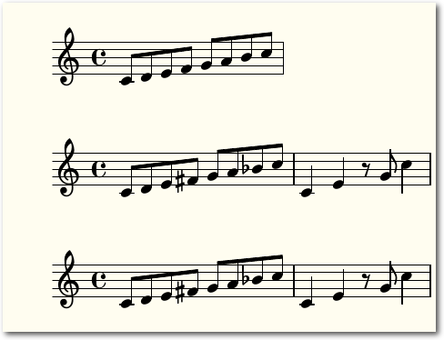Beispiel 1: Mehrere Tonleitern mit LilyPond.
Ebenso kann die im angloamerikanischen Raum weiter verbreitete Notation („flat“ und „sharp“) mittels f oder s verwendet werden (z. B. as für „a sharp“). Hierfür muss allerdings zuerst der Befehl \language "english" in der header section vermerkt werden.
\version "2.18.2"
\relative c'
{
c8 d e f g a b c | %m1
}
\relative c'
{
c8 d e fis g a bes c | %m1
c,4 e r8 g c4 | %m2
}
\language "english"
\relative c'
{
c8 d e fs g a bf c | %m1
c,4 e r8 g c4 | %m2
}
Listing: Tonleitern.ly
Prinzipiell ist diese Information für LilyPond bereits ausreichend, um eine
PDF-Datei mit der beschriebenen Melodie zu erstellen. Zusätzlich ist es aber
noch möglich, die grundlegende Struktur des Werkes zu beeinflussen. Um die
Notation in einem bestimmten Notenschlüssel (z. B. im Bass-Schlüssel)
anzuzeigen, kann der Befehl \clef "bass" eingegeben werden. Die Tonart kann mit
dem Befehl \key verändert werden, wobei neben dem Grundton auch das
Tongeschlecht (\major oder \minor für Dur oder Moll) angegeben werden muss (z. B.
\key d \major. Die Taktart kann mittels des Befehls \time verändert werden,
gefolgt von dem gewünschten Takt (z. B. \time 3/4). Um Angaben zum Tempo zu
machen, kann der Befehl \tempo verwendet werden, gefolgt von einem Text in
Anführungszeichen sowie gegebenenfalls einer Tempoangabe (z. B. "Allegro" 4 = 110), wobei
letztere optional ist. Diese Befehle werden direkt in den geschwungenen Klammern
platziert.
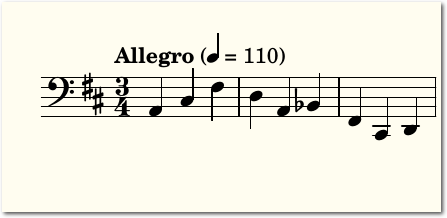\relative c'
{
c8 d e f g a b c | %m1
}
\relative c'
{
c8 d e fis g a bes c | %m1
c,4 e r8 g c4 | %m2
}
\language "english"
\relative c'
{
c8 d e fs g a bf c | %m1
c,4 e r8 g c4 | %m2
}
Beispiel 2: Änderung grundlegender Parameter.
\version "2.18.2"
\relative c
{
\time 3/4
\tempo "Allegro" 4 = 110
\clef "bass"
\key d \major
a cis fis
d a bes
fis cis d
}
Listing: Parameteraenderung.ly
\relative c
{
\time 3/4
\tempo "Allegro" 4 = 110
\clef "bass"
\key d \major
a cis fis
d a bes
fis cis d
}
Erweiterung der Grundfunktionalität
Unkommentiert werden Noten in LilyPond als Viertelnoten dargestellt. Um alternative Dauern einer Note festzulegen, muss die gewünschte Zeit beschrieben werden. Hierfür wird für eine Achtelnote eine 8 hinter die Note notiert, für eine halbe Note eine 2 und so weiter. Für alle nachfolgenden Noten wird diese Dauer übernommen, bis diesbezüglich eine neue Angabe gemacht wird. Möchte man zum Beispiel als Notenfolge eine Viertelnote, vier Sechzehntelnoten und zwei Achtelnoten schreiben, kann dies mittels { d4 bes16 a as g fis8 e } durchgeführt werden. Pausen werden analog gekennzeichnet, allerdings wird statt einer Tonhöhe ein r (für „rest“) geschrieben. Ein Beispiel hierfür wäre { a4 fis8 r e es }. Wenn man nicht bei jeder Note dazuschreiben möchte, in welchem Register sie zu lesen ist, empfiehlt es sich, vor der geschwungenen Klammer den Befehl \relative mit der Tonhöhe zu vermerken (also z. B. \relative c’ für das eingestrichene C). Bei diesem Befehl wird die erste Note in der Oktave um das eingestrichene C platziert. Dadurch werden alle nachfolgenden Noten in der die vorhergehende Note umgebende Oktave gesetzt. Um größere Notensprünge durchzuführen, kann ein Komma oder Apostroph (, oder ') verwendet werden. Die hiermit gekennzeichnete Note wird dadurch um eine Oktave tiefer oder höher notiert. Ein Beispiel dafür ist { fis8 r a' cis, d4 }. 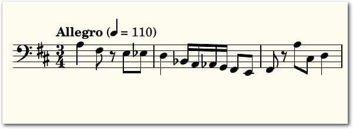Beispiel 3: Variable Notendauern und Oktavsprünge.
\version "2.18.2"
\relative c'
{
\time 3/4
\tempo "Allegro" 4 = 110
\clef "bass"
\key d \major
a4 fis8 r e es
d4 bes16 a as g fis8 e
fis8 r a' cis, d4
}
Listing: Notendauern_Oktavspruenge.ly
Wenn einzelne musikalische Elemente öfter verwendet werden, können hierfür
Variablen definiert werden. Wichtig ist hierbei, dass deren Bezeichnungen
lediglich aus Buchstaben bestehen dürfen. Der musikalische Inhalt ist dabei in
geschwungene Klammern eingeschlossen. Auch dieser Befehl muss außerhalb des
Haupttextes stehen. Ein Beispiel hierfür ist erstvariable = { c4 e fis g }.
Aufgerufen wird diese anschließend im Hauptteil der Notendatei mittels des
Befehls \erstvariable.
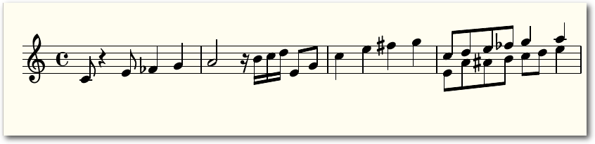\relative c'
{
\time 3/4
\tempo "Allegro" 4 = 110
\clef "bass"
\key d \major
a4 fis8 r e es
d4 bes16 a as g fis8 e
fis8 r a' cis, d4
}
Beispiel 4: Erstellen und Abrufen von Variablen.
\version "2.18.2"
erstvariable = { c4 e fis g }
\relative c'
{
c8 r4 e8 fes4 g
a2 r16 b c d e,8 g8
\erstvariable
<< { c,8 d e fes g4 a } \\ { e,8 a ais b c d e4} >>
}
Listing: Variablen.ly
Um mehrstimmige Melodieteile zu schreiben, wird der Abschnitt, welcher in
mehreren Stimmen geführt werden soll, zuerst mit zwei spitzen Klammern (<<>>)
markiert, um so zu symbolisieren, dass die folgenden Ausdrücke
zusammengehören. Anschließend wird eine Melodie in geschwungenen Klammern
({}) geschrieben. Nach Abschluss der ersten Melodie
mit der geschwungenen Klammer wird durch zwei darauf folgende „backslashes“
(\\) kenntlich gemacht, dass nun die 2. Melodie beginnt. Diese wird wieder
zwischen zwei geschwungene Klammern gesetzt.
Beendet
wird der ganze Abschnitt
wieder mit zwei spitzen Klammen. Ein Beispiel kann folgendermaßen aussehen:
<<{ c,8 d e fes g4 a } \\ { e,8 a ais b c d e4 }>>
erstvariable = { c4 e fis g }
\relative c'
{
c8 r4 e8 fes4 g
a2 r16 b c d e,8 g8
\erstvariable
<< { c,8 d e fes g4 a } \\ { e,8 a ais b c d e4} >>
}
Kommentare und Artikulation
Kommentare helfen dabei, den eigenen Code übersichtlicher zu gestalten. Bei LilyPond werden diese mit einem vorangestellten % markiert. Möchte man größere Bereiche (über mehr als eine Zeile gehend) als Kommentar kennzeichnen, erreicht man das mit:%{ Dieser Kommentar
erstreckt sich
über mehrere Zeilen %}
Im Header kann man neben Variablen und der Sprache auch noch zusätzliche für
das Musikstück relevante Informationen vermerken. Hierzu gehört etwa der Titel
oder der Komponist eines Werkes.
Wie viele andere Programmiersprachen beachtet LilyPond Leerzeichen nicht, daher
ist die Anzahl der Leerzeichen zwischen zwei Befehlen irrelevant. Dass es sich
natürlich trotzdem empfiehlt, durch grafische Formatierungen den eigenen Code
übersichtlicher zu halten, ist selbstredend. Dies kann aber nicht nur mit
Kommentaren und Formatierungen geschehen, sondern auch mit „bar checks“
durchgeführt werden. Diese werden mittels eines senkrechten Strichs (|)
eingefügt und markieren das Ende eines Taktes. Prinzipiell fügt LilyPond auch
automatisch einen Taktstrich am Ende eines jeden Taktes ein. Mit Hilfe dieser
Funktion kann man allerdings sowohl direkt überprüfen, ob die Eingabe korrekt
ist, als auch die Texte deutlich übersichtlicher gestalten. Eine Nummerierung
der Takte kann zudem zusätzlich mit Hilfe der Kommentarfunktion erfolgen. Ein
Beispiel hierfür wäre {a2 r16 b c d e8 g8| %m2}
Mit LilyPond ist es ebenso möglich, Artikulationszeichen einzufügen. Am
einfachsten ist dies mittels der Frescobaldi-Oberfläche (aktuelle Version im
Februar 2015: 2.17.1) durchzuführen. Hier aktiviert man unter der Rubrik „Tools - Quick Insert“
und kann anschließend unter vielen verschiedenen
Artikulationsmöglichkeiten eine oder mehrere grafisch auswählen. Falls man dies
im Editor machen möchte, muss man nach der jeweiligen Note erst einen
Bindestrich einfügen und anschließend das jeweils dazugehörige Zeichen, etwa für
ein Staccato einen Punkt. Selbiges gilt auch für das Hinzufügen von dynamischen
Modulationen oder unterschiedliche Arten von Taktstrichen.
erstreckt sich
über mehrere Zeilen %}
Erstellung komplexerer Werke
LilyPond ist nicht nur auf das Setzen von Einzeltönen beschränkt. Wenn beispielsweise ein Akkord eingefügt werden soll, kann man mehrere Noten mit spitzen Klammern umfassen, um sie übereinander darzustellen. Wichtig hierbei ist jedoch, dass man eventuelle Notendauern erst nach der geschlossenen spitzen Klammer durchführt. Ein Beispiel hierfür ist { a2 r16 b, c d e8 <g c,>8 }.\version "2.18.2"
% Kommentar: Das erste Musikstück
\header {
title = "Musikstück Nummer Eins"
composer = "Der Komponist"
subtitle = "Mein erstes Musikstück mit LilyPond"
}
\language "english"
\relative c'
{
c8 r4 e8-. fs4 g
a2^"Laut" r16 b c d e8 g8
a2 r16 b, c d e8 <g c,>8
}
Listing: Artikulation.ly
Um Informationen über einzelnen Noten zu platzieren, kann dies durch ein Zirkumflex
gemacht werden. Hierzu muss lediglich im Anschluss an eine Note nach dem ^
der Text in Anführungszeichen gesetzt werden, wie etwa a2^"Laut". Der Text
erscheint anschließend direkt über der Note.
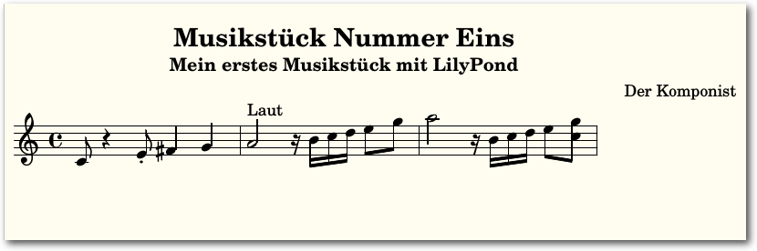% Kommentar: Das erste Musikstück
\header {
title = "Musikstück Nummer Eins"
composer = "Der Komponist"
subtitle = "Mein erstes Musikstück mit LilyPond"
}
\language "english"
\relative c'
{
c8 r4 e8-. fs4 g
a2^"Laut" r16 b c d e8 g8
a2 r16 b, c d e8 <g c,>8
}
Beispiel 5: Musikstück mit Artikulation.
Um Songtexte in LilyPond einzufügen, benutzt man den Befehl \addlyrics { Hier steht ein Text }. Silben werden hierbei mit Hilfe von Leerzeichen getrennt. Es empfiehlt sich auch hier, Taktstriche mit Kommentaren einzufügen, um einen besseren Überblick über die einzelnen Teile zu behalten; unbedingt notwendig ist dies jedoch auch hier nicht. Wichtig ist, dass die zusammengehörigen Teile (also Musik und Text) ähnlich wie bei mehrstimmigen Melodien mit zwei spitzen Klammern umfasst werden. Ähnlich funktioniert die Eingabe von Akkordsymbolen. Auch hier muss der zusammengehörige Teil mit zwei spitzen Klammern umfasst werden. Die Akkordsymbole werden geschrieben, indem zuerst der Grundton angegeben wird, gefolgt von einer Ziffer, welche die Dauer (z. B. eine 1 für einen Akkord über einen ganzen Takt ) kennzeichnet, sowie einem Doppelpunkt. Danach wird die Akkordart spezifiziert; etwa für einen Moll-Sept-Akkord der Befehl m7 oder für einen Dominant-Sept-Akkord lediglich 7. Beispiele wären etwa e2:m7 oder c2:7 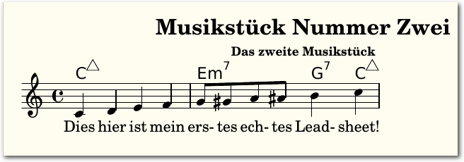
Beispiel 6: Ein echtes Leadsheet.
\version "2.18.2"
% Das zweite Musikstück
\header {
title = "Musikstück Nummer Zwei"
subsubtitle = "Das zweite Musikstück"
}
\language "english"
<<
\chords {
c1:maj7 | %m1
e2:m7 g4:7 c4:maj | %m2
}
\relative c'
{
c4 d e f | %m1
g8 gs a as b4 c | %m2
}
\addlyrics {
Dies hier ist mein | %m1
ers- tes ech- tes Lead- sheet!
}
>>
Listing: Leadsheet.ly
Mit Hilfe dieser Befehle ist es möglich, mit überschaubarem Aufwand ein
ästhetisch ansprechendes Leadsheet zu erstellen. Detailliertere Informationen
kann man im bereits oben erwähnten LilyPond-Handbuch nachlesen. Die
Video-Tutorials von Ben Lemon [18]
bieten ebenso einen
hervorragenden kurzen Einblick in die Verwendung von grundlegenden
Funktionen von LilyPond.
Links% Das zweite Musikstück
\header {
title = "Musikstück Nummer Zwei"
subsubtitle = "Das zweite Musikstück"
}
\language "english"
<<
\chords {
c1:maj7 | %m1
e2:m7 g4:7 c4:maj | %m2
}
\relative c'
{
c4 d e f | %m1
g8 gs a as b4 c | %m2
}
\addlyrics {
Dies hier ist mein | %m1
ers- tes ech- tes Lead- sheet!
}
>>
[1] http://www.lilypond.org/index.de.html
[2] https://de.wikipedia.org/wiki/Notensatzprogramm#Kommerzielle_WYSIWYG-Notensatzprogramme
[3] http://musescore.org/de
[4] https://de.wikipedia.org/wiki/MuseScore
[5] http://lilypond.org/
[6] http://denemo.org/
[7] https://de.wikipedia.org/wiki/Denemo
[8] http://sourceforge.net/projects/canorus/
[9] https://de.wikipedia.org/wiki/Canorus
[10] http://abcnotation.com/
[11] http://de.wikipedia.org/wiki/ABC_(Musiknotation)
[12] http://icking-music-archive.org/software/htdocs/index.html
[13] https://de.wikipedia.org/wiki/MusiXTeX
[14] http://lilypond.org/doc/v2.18/Documentation/learning/index.html
[15] http://lilypond.org/manuals.html
[16] http://frescobaldi.org/
[17] https://de.wikipedia.org/wiki/Frescobaldi_(Software)
[18] http://benlemon.me/blog/music/lilypond/operation-lilypond
| Autoreninformation |
| Alexander Tolios ist 2012 von Windows auf Linux migriert. Als Musikwissenschaftler und Musiker in der Band entferner beschäftigt er sich regelmäßig mit Audio-Editoren, Notensatzprogrammen und anderer Audio-Software. |
Beitrag teilen Beitrag kommentieren
Zum Inhaltsverzeichnis
Impress.js-basierte Präsentationen mit Hovercraft
von Daniel Stender In den letzten Jahren ist eine ganze Reihe von freien Präsentations-Frameworks entstanden, die auf die Kombination von HTML, CSS und JavaScript setzen. Die damit erzeugten Folien können flexibel mit einem Browser gezeigt werden. Außerdem lassen sich die umfangreichen Transformations- und Transitions-Eigenschaften von CSS3 für ästhetisch ansprechende Präsentationen einsetzen. In diesem Artikel wird der Generator Hovercraft [1] vorgestellt, der dabei hilft, Impress.js-Präsentationen zu erzeugen. Unter den JavaScript-Bibliotheken für Präsentationen ragt Impress.js mit nahezu unbegrenzten gestalterischen Fähigkeiten hervor [2]. Nicht-lineare Präsentationen mit regelrechten Kamerafahrten durch einen virtuellen, dreidimensionalen Präsentationsraum sind damit möglich. Ausgefeilte Impress.js-Präsentationen sind zwar wahre Hingucker, allerdings muss man dafür sehr gut mit CSS3 und HTML5 umgehen können. Außerdem ist Impress.js nicht für einen experimentellen Workflow geeignet, denn die gesamte Präsentation mit allen Effekten muss hierfür von Anfang an feststehen. An dieser Stelle kommt Hovercraft ins Spiel. Das ist ein in Python umgesetzter Generator, mit dem aus der einfachen Markup-Sprache reStructuredText ansprechende Impress.js-Präsentationen erzeugt werden können [1]. Aus einem einfachen Skript wird die Präsentation von Hovercraft abspielfertig in ein Verzeichnis mit allen benötigten Javascript-Bibliotheken und Stylesheets generiert. Hovercraft benötigt nur ein Minimum an Schreibaufwand und positioniert im Gegensatz zu Impress.js automatisch, sodass auch das nachträgliche Einfügen von Folien keine Schwierigkeiten macht.Installation
Hovercraft-Pakete sind unter den Linux-Distributionen leider rar, lediglich für Fedora gibt es die veraltete Version 1.1 [3]. Für Debian GNU/Linux wird die aktuelle Version 2.0 aber demnächst als Paket komplett mit Beispielen sowie der Dokumentation verfügbar sein [4]. Die aktuelle Version von Hovercraft kann aber auch einfach mit dem Installer Pip direkt aus dem offiziellen Python Package Index (Pypi) bezogen werden [5]. Dazu benötigt man zunächst das Paket für Pip, was von der eigenen Distribution abhängt. Auf Debian- beziehungsweise anderen DEB-basierenden Systemen wie Ubuntu oder Linux Mint lautet dieses zum Beispiel python3-pip. Nach der Installation kann die Software bequem damit installiert werden. Hovercraft ist in Python 3 geschrieben und muss deshalb mit der richtigen Variante von Pip gezogen werden:# pip3 install hovercraft
Pip lädt dann die angeforderte Software zusammen mit allen benötigten
Abhängigkeiten aus dem Pypi herunter und installiert alles unterhalb von
/usr/local. Danach steht der Generator hovercraft auf der Kommandozeile
bereit, um Präsentationen zu erzeugen.
Im Quellcode-Repositorium [6] gibt es einen nützlichen Ordner mit
Beispiel-Präsentationen. Es lohnt sich auf jeden Fall, diesen auch noch dazu zu
holen. In einem einem beliebigen Verzeichnis ruft man dafür auf (benötigt das
Paket git):
$ git clone http://github.com/regebro/hovercraft.git
Im Quellcode-Verzeichnis finden sich in dem Unterordner docs/examples eine
Demonstration (hovercraft.rst), ein Einsteiger-Tutorial (tutorial.rst)
sowie ein weiterführendes Tutorial (positions.rst). Um sich Hovercraft
anzueignen, liest man natürlich zunächst die Dokumentation [7].
Viel bringt aber auch das Studium der Quellen der Beispiele im Vergleich mit den
Präsentationen, die daraus generiert werden (Motto: „Use the source, Luke!“).
Schreiben
Hovercraft-Präsentationen werden ganz einfach mit einem gewöhnlichen Editor als Unicode codierte Textfiles in reStructuredText [8] geschrieben. Diese Markup-Sprache (Abkürzung: reST) ist entwickelt worden, um Python-Dokumentation mit möglichst geringem Aufwand schreiben zu können und ist praktisch wie intuitives Markup in einem Plaintext [9]. Um einige reST-Elemente zu nennen: ein Text zwischen zwei einzelnen Asterisk (*) wird kursiv gesetzt, der zwischen doppelten Asterisken fett. Überschriften erster Ordnung werden von Gleichheitszeichen unterstrichen, und diejenigen zweiter Ordnung von Bindestrichen. Eine einfache Aufzählungsliste erhält man durch mit Asterisk beginnende und durch Leerzeilen getrennte Zeilen. Und mit vier oder mehr, in einer eigenen Zeile abgesetzten, Bindestrichen beginnt immer eine neue Folie. Dies kann man auch in der folgenden Beispiel-Präsentation sehen::title: Beispiel-Präsentation
:author: Max Mustermann
:css: tutorial.css
:data-transition-duration: 2000
Das hier ist eine Beispiel-Präsentation mit einem absolut zufällig gewähltem
Thema.
----
Python 3.4
==========
Die neue Python-Version im Überblick
------------------------------------
Eine Beispiel-Präsentation mit **Hovercraft**
----
:data-x: r1000
:data-y: r1000
In der neuen Python-Version gibt es nun mit der Klasse *Enum* auch einen
Aufzählungstyp
----
:data-rotate: 90
Konstanten Werten symbolische Namen zuzuweisen ist sehr nützlich für:
* Schulnoten
* Wochentage
* Haltestellen einer Straßenbahnlinie
----
:data-x: r1000
:data-y: r0
:data-scale: 0.1
Hier ein Ausschnitt aus der Bibliothek *enum.py*:
.. code:: python
def _is_descriptor(obj):
"""Returns True if obj is a descriptor, False otherwise."""
return (
hasattr(obj, '__get__') or
hasattr(obj, '__set__') or
hasattr(obj, '__delete__'))
----
:data-x: r-5000
:data-rotate-x: 180
:data-scale: 3
*Hovercraft* wird unterstützt von:
.. image:: images/python-logo-master-v3-TM.png
:height: 213
:width: 611
Listing: Beispiel-Praesentation.rst
Im Kopf vor der ersten Folie kann beliebiger Text stehen. Ganz oben im Quelltext
können darüber hinaus auch einige Datenfelder für Metadaten wie zum Beispiel
:title: und :author: verwendet werden, die dann im <head> des erzeugten
HTML als <title> und <meta name="author"> ausgegeben werden. Programmcode
wird mit der
reST-Direktive code dargestellt, wobei die Sprache für
den eingebauten Syntax-Highlighter angegeben
wird [10]. Bilder können mit image eingebunden werden, das als Parameter unter anderem eine angepasste
Bildgröße akzeptiert [11].
:author: Max Mustermann
:css: tutorial.css
:data-transition-duration: 2000
Das hier ist eine Beispiel-Präsentation mit einem absolut zufällig gewähltem
Thema.
----
Python 3.4
==========
Die neue Python-Version im Überblick
------------------------------------
Eine Beispiel-Präsentation mit **Hovercraft**
----
:data-x: r1000
:data-y: r1000
In der neuen Python-Version gibt es nun mit der Klasse *Enum* auch einen
Aufzählungstyp
----
:data-rotate: 90
Konstanten Werten symbolische Namen zuzuweisen ist sehr nützlich für:
* Schulnoten
* Wochentage
* Haltestellen einer Straßenbahnlinie
----
:data-x: r1000
:data-y: r0
:data-scale: 0.1
Hier ein Ausschnitt aus der Bibliothek *enum.py*:
.. code:: python
def _is_descriptor(obj):
"""Returns True if obj is a descriptor, False otherwise."""
return (
hasattr(obj, '__get__') or
hasattr(obj, '__set__') or
hasattr(obj, '__delete__'))
----
:data-x: r-5000
:data-rotate-x: 180
:data-scale: 3
*Hovercraft* wird unterstützt von:
.. image:: images/python-logo-master-v3-TM.png
:height: 213
:width: 611
Generieren
Jederzeit kann aus dem Quellcode die fertige Präsentation generiert werden. Dazu ruft man einfach Hovercraft auf der Kommandozeile zusammen mit dem Dateinamen und einem beliebigen Ausgabeverzeichnis auf:$ hovercraft beispiel.rst ausgabe/
In diesem Verzeichnis befindet sich dann die fertige HTML-Datei der Präsentation
index.html, die mit einem Browser abgespielt werden kann. Darüber hinaus finden
sich hier auch ein Verzeichnis mit vom System eingebundenen CSS-Stylesheets, und
ein anderes mit Javascript-Dateien (.js) inkl. impress.js. Ein
eventuell verwendetes Unterverzeichnis für eingebundene Bilder sowie ein eigenes
Stylesheet werden auch mit hineinkopiert. Möchte man die Präsentation versenden
oder auf einen USB-Stick ziehen, so kopiert man immer den gesamten
Ordner.
Wenn Hovercraft gestartet wird, ohne dass ein Verzeichnis angegeben wird, dann fährt ein
rudimentärer Server mit der Präsentation hoch, anstatt die Dateien fertig
generiert auszugeben. Die Präsentation kann dann direkt unter der Adresse
http://127.0.0.0.1:8000 angesehen werden. Das ist als Entwicklungslösung
gedacht: Wird die Quelle verändert, dann wird die Präsentation automatisch
nachgeneriert. Die Voreinstellung für die Port-Nummer kann dabei mit -p PORT
angepasst werden, falls ein anderer Prozess den lokalen Port 8000 bereits
belegt.
Präsentieren
Wenn die Präsentation in den Browser geladen ist, öffnet sich darüber zunächst ein transparentes Hilfe-Fenster, das mit der Taste „H“ wieder geschlossen werden kann. Der erste elegante Effekt: Verändert man die Größe des Fensters, dann passt sich die Schriftgröße langsam fließend entsprechend der voreingestellten Proportionen an. Durch die Folien blättert man nun entweder mit „Space“ oder mit den Pfeiltasten. Wenn keine anderen Übergänge ausgewählt worden sind, dann gleiten die Folien von rechts nach links und schieben sich dabei gegenseitig weg. Nach der letzten Folie fährt die Präsentation automatisch wieder auf den Anfang zurück. Mit der Taste „P“ wird ein neues Browserfenster mit einer praktischen Konsole zur Unterstützung des Vortragenden geöffnet. Hier finden sich die aktuelle und die nächste Folie gleichzeitig dargestellt, die gegenwärtige Uhrzeit sowie ein Timer. Es können darüber hinaus in der Quelle mit der reST-Direktive note Notizen zu jeder Folie aufgezeichnet werden, die auch in dieser Konsole angezeigt werden. Der Sinn der Sache ist, das Präsentationsfenster etwa auf einem Laptop für einen Beamer an den externen Video-Ausgang zu legen, während die Konsole nur für den Redner sichtbar bleibt. Wenn die Folien ins Netz gestellt werden sollen, empfiehlt es sich auf jeden Fall, beim Generieren mit der Option -t simple die Konsole zu deaktivieren, und mit --skip-notes auch die Notizen auszuschließen. Mit der Option --skip-help wird außerdem mitgegeben, dass das Hilfe-Fenster beim Starten nicht direkt geöffnet werden soll.Style
Das Aussehen einer von Hovercraft generierten Präsentation mit Farben und Schriften wird von einem CSS-Stylesheet bestimmt. Wenn nicht explizit angegeben wird, welches Stylesheet für eine Präsentation verwendet werden soll, wird nur ein rudimentäres Stylesheet eingebunden. Dieses enthält keine Design-Elemente für die Präsentation und dient nur dazu, vom Benutzer weiter ausgebaut zu werden. Ohne weitere CSS-Elemente darin gibt es zunächst nur ein kaum brauchbares, „nacktes“ Design mit zum Beispiel viel zu kleiner Schrift. Wer aber keine ausreichenden Webdesign-Fähigkeiten hat, um mit CSS3 direkt draufloszuschreiben, für den empfiehlt es sich wohl eher ein bereits vorhandenes, umfassendes Stylesheet zu verwenden und ggf. nach seinem Geschmack anzupassen. So kann man etwa die Datei aus den Beispielen docs/examples/tutorial.css verwenden. Man muss diese nur zu der eigenen Präsentation kopieren, und sie dann im Kopf in dem Feld :css: einbinden, wie in der Beispiel-Präsentation zu diesem Artikel. CSS-Styles können auch für einzelne Folien eingebunden werden, allerdings sollte man starke Kontraste nur sehr sparsam einsetzen. Um sicherzustellen, dass die Präsentationen auch auf allen System gleich aussieht, sollte man immer ganz bestimmte Zeichensätze verwenden. Google Fonts zum Beispiel bietet die Möglichkeit, Zeichensätze über das Web mit @import im CSS-Stylesheet einzubinden [12]. Eine Anleitung dafür bekommt man, wenn man auf der Google-Seite bei dem gewünschten Font auf „Quick-use“ klickt. Allerdings ist es für Präsentationen immer ein gewisser Unsicherheitsfaktor, auf einen stabilen Netzanschluss zu bauen. Deshalb empfiehlt es sich eher, die verwendeten Zeichensätze auch als Dateien einzubetten. Ein Zeichensatz zum Beispiel im WOFF-Format kopiert man dafür etwa in ein Verzeichnis fonts, und bindet ihn dann mit @font-face im CSS-Stylesheet ein:@font-face {
font-family: Libre Baskerville;
src: url(fonts/libre-baskerville.woff) format('woff');
}
Das Verzeichnis mit den Schriften kopiert Hovercraft dann mit in den
Ausgabe-Ordner.
font-family: Libre Baskerville;
src: url(fonts/libre-baskerville.woff) format('woff');
}
Übergänge
Besondere Übergangeffekte erzeugt man in Hovercraft mit einer Reihe von Datenfeldern, aus denen Steuerungsanweisungen für Impress.js generiert werden. Im zweidimensionalen Raum beeinflussen :data-x: und :data-x: die horizontale und vertikale Position einer Folie, :data-rotate: rotiert in Grad, und :data-scale: bestimmt den Zoomfaktor. Die Werte dafür werden in Pixeln angegeben und können auch negativ sein. Ein vorgestelltes r wird verwendet, um die relative Position zueinander anzugeben. Die Datenfelder werden jeweils zu Beginn einer Folie eingetragen und die Einstellungen bleiben für den Rest der Präsentation bestehen. Legt man bei einer Folie zum Beispiel :data-x: r1000 und :data-y: r1000 fest, dann tritt bei diesem Übergang ein Schwenkeffekt nach unten rechts für die Präsentation ein. Mit :data-rotate: 90 dreht sich die Darstellungsfläche mit der folgenden Folie um 90 Grad. Aber Achtung: nach dieser Drehung geht es nicht nach rechts unten, sondern nach rechts oben weiter! Um Folien nun von oben herein zoomen zu lassen stellt der Benutzer zunächst mit :data-x: r1000 und :data-y: r0 die relative Position der nächsten Folie neu ein. Mit einem Wert 0.1 für :data-scale: fährt diese Folie dann auch noch von hinten hervor (<1 zoomt rein, >1 raus). Impress.js ist aber mit zwei Dimensionen noch längst nicht ausgereizt. Dafür stehen unter anderem die Datenfelder :data-rotate-x: und :data-rotate-y: zur Verfügung, mit denen die Präsentationsebene um bestimmte Gradzahlen gekippt werden kann. Im der Beispiel-Präsentation wird die letzte Folie damit um 180 Grad in der dritten Dimension gekippt. Mit einer relativen Position von -5000 Pixeln und einer 3-fachen Skalierung schrauben sich bei der Fahrt dorthin die vorherigen Folien als frei im Raum stehender Text alle auch noch einmal vorbei. Wenn im Kopf mit data-transition-duration die Zeit für die Effekte mit 2000 auch noch auf 2 Sekunden hoch gestellt wird, dann hat der Zuschauer auch noch mehr Zeit, diesen und die anderen Effekte richtig zu genießen. 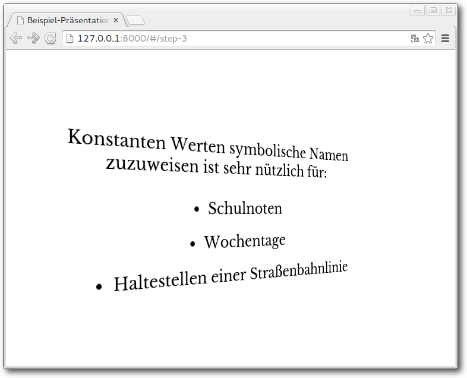Screenshot einer Hovercraft-Präsentation.
Fazit
Mit Hovercraft können mit einem absoluten Minimum an Aufwand sehenswerte Präsentationen auf hohem technischen Niveau erstellt werden. Die erzeugten Folien können flexibel in einem Browser gezeigt werden. Es genügen dabei Grundkenntnisse in CSS, um die Javascript-Bibliothek Impress.js sogar für dreidimensionale Übergangseffekte einzusetzen. Hovercraft bietet einen Skript-basierten Workflow mit allen seinen Vorteilen; so kann die Quelle zum Beispiel unter eine Versionskontrolle gestellt werden. Es gibt hier allerdings noch Entwicklungspotential: Fragmentierungen wie zum Beispiel bei dem Präsentations-Framework Reveal.js [13] (siehe „Präsentationen mit HMTL und reveal.js“, freiesMagazin 03/2014 [14]) für unter anderem inkrementell eingeblendete Aufzählungspunkte fehlen hier leider noch. Auch gibt es noch keine Automatik und Endlosschleife, mit der Hovercraft auch für die Werbung eingesetzt werden könnte. Und leider laufen die erstellten Präsentationen nicht in allen Browsern immer gleich gut [15]. Dies hat allerdings eher mit Entwicklungsrückständen bei den Browsern zu tun. Vor allem bei älteren Versionen kann es schnell kritisch werden, sodass man im Zweifelsfall besser den korrekten Ablauf vorher testet. Links[1] http://regebro.github.io/hovercraft/
[2] http://bartaz.github.io/impress.js
[3] http://pkgs.org/search/?query=hovercraft
[4] http://bugs.debian.org/780793
[5] http://pypi.python.org/pypi/hovercraft
[6] http://github.com/regebro/hovercraft
[7] http://hovercraft.readthedocs.org/en/latest/
[8] https://de.wikipedia.org/wiki/ReStructuredText
[9] http://docutils.sourceforge.net/docs/user/rst/quickref.html
[10] http://pygments.org/docs/lexers/
[11] http://docutils.sourceforge.net/docs/ref/rst/directives.html#images
[12] http://www.google.com/fonts/
[13] http://lab.hakim.se/reveal-js/
[14] http://www.freiesmagazin.de/freiesMagazin-2014-03
[15] https://hovercraft.readthedocs.org/en/latest/designing.html#test-with-different-browsers
| Autoreninformation |
| Daniel Stender (Webseite) ist offizieller Debian GNU/Linux-Maintainer und betreut Hovercraft und Pakete aus den Bereichen Python-Bibliotheken, OCR und Medienherstellung. |
Beitrag teilen Beitrag kommentieren
Zum Inhaltsverzeichnis
Gesundheit am PC
von Yannic Haupenthal Man kennt das sicher: Man sitzt täglich viel – und dann auch noch am PC. Dass das für den Körper nicht gut sein kann, ist wohl offensichtlich. Daher im Folgenden einige Tipps, wie am Computer gearbeitet werden kann, ohne sich gesundheitlich zu schädigen. Die bekanntesten Erscheinungen nach zu langer Zeit am PC sind das RSI-Syndrom [1] (Repetitive Strain Injury-Syndrom) und Rückenschmerzen. Aber auch die Augen können von zu grellem Licht ermüden bzw. schmerzen [2] [3]. Es gibt einige Programme, die dazu animieren, mal eine kleine Pause zu machen und somit die RSI-Syndrome, Rückenschmerzen und Augenprobleme zu vermindern. Im Folgenden werden diese Programme unterteilt in „Hände“, „Augen“ und „Allgemein“.Hände
In Punkt 34 seines Artikels über das Hamsterrad-Management [4] stellt Markus Cerenak [5] eine Software namens „Time Out“ [6] vor. Da es die Software allerdings nur für MacOS X gibt, hier eine Liste mit Alternativen für Linux.GNOME Break Timer
GNOME Break Timer [7] ist eine Anwendung für den GNOME Desktop, die erkennt, wie lange man am PC sitzt und dementsprechend zu Pausen auffordert. Installieren lässt sich gnome-break-timer durch die Paketverwaltung. Beim Starten führt das Programm den Nutzer durch die vorhandenen Optionen. Man kann dabei zwischen einem Mix aus kurzen und langen Pausen, weniger langen Pausen oder häufigen, dafür aber kürzeren Pausen wählen. Darüber hinaus ist auch noch die Zeit in Minuten einstellbar, die zwischen zwei aufeinanderfolgenden Pausen verstreichen soll und wie lange die Pausen andauern sollen. 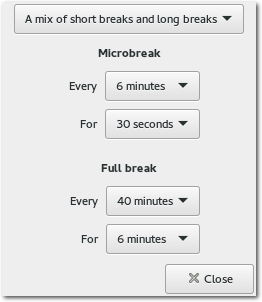Dialog zum Einstellen der Pausenzeiten mit den Wiederholungen.
Eine Pause wird im Programm angekündigt, aber auch per Desktopbenachrichtigung (bei Fenstermanagernutzern kann z. B. dunst [8] verwendet werden). Nach der Pause ertönt ein Signalton. Das Programm läuft im Hintergrund weiter, wenn der GNOME Break Timer geschlossen wird.
RSIBreak
RSIBreak [9] ist eine KDE-Anwendung, die genau den gleichen Ansatz verfolgt wie ihr Pendant bei GNOME. Installieren lässt sich RSIBreak durch das Paket rsibreak in der Paketverwaltung. 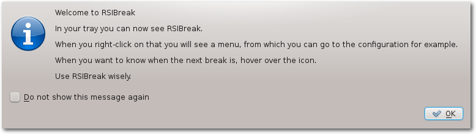Infodialog beim Start von RSIBreak.
Beim Programmstart versteckt sich RSIBreak in der Statusleiste (bei Fenstermanagernutzern kann diese beispielsweise durch stalonetray [10] aufgerufen werden). Von dort kann es per Rechtsklick auf das Icon konfiguriert werden. Dank des Versteckens in der Statusleiste kann es beim Starten des X-Servers mitgestartet werden – entweder durch den Autostart [11] bei Desktopumgebungen oder durch die folgende Zeile in der Datei .xinitrc im Benutzerverzeichnis:
rsibreak &
Die Optionen von RSIBreak sind deutlich umfangreicher als bei GNOME Break Timer. So gibt
es diverse Einstellungen was während der Pausen
passieren soll und Aktionen, die beim Start oder am Ende einer Pause ausgeführt
werden sollen.
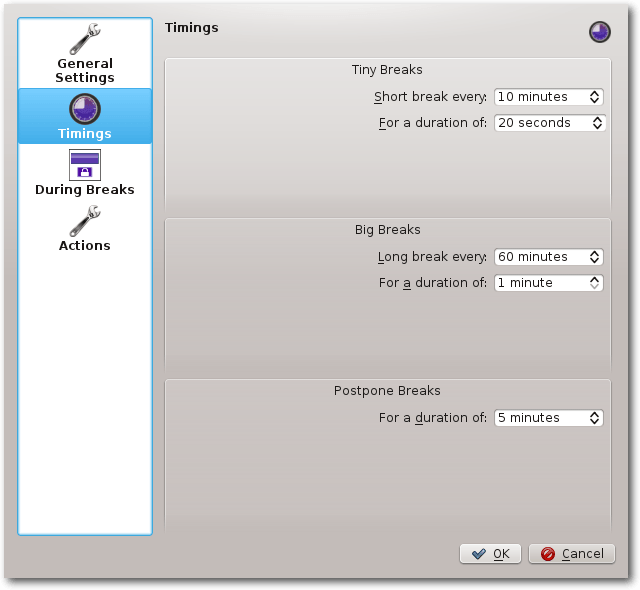Optionen zum Einstellen der Pausenlängen und Wiederholungen.
Des Weiteren gibt es eine Statistik, die einiges über die Zeit am Rechner hervorbringen kann. 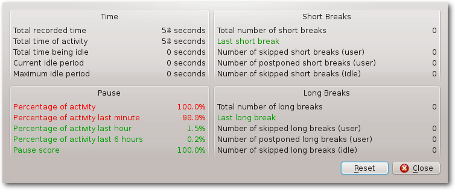
Die Statistik von RSIBreak.
Xwrits
Xwrits [12] ist ein kleines Programm, welches wie auch die beiden Programme zuvor an Pausen erinnert. Das Paket xwrits kann über die Paketverwaltung installiert werden. Starten und Einstellen lässt sich das Programm über die Kommandozeile. In den Standardeinstellungen soll alle 55 Minuten eine fünfminütige Pause erfolgen. In einer Pause wird dem Nutzer über Bilder angezeigt, dass die Hände eine Pause brauchen. 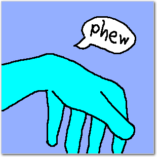Bild zum Anzeigen, dass die Pause vorüber ist.
Dank der Optionen, die per Parameter übergeben werden können (siehe dazu auch die Manpage von xwrits) eignet es sich wie auch RSIBreak für die Datei .xinitrc oder den Autostart.
Workrave
Workrave [13] erinnert ebenfalls in regelmäßigen Zeitabständen an eine Pause. Das Programm gibt es übrigens auch für Microsoft Windows. Installieren lässt sich Workrave über das Paket workrave in der Paketverwaltung. Workrave sieht beim ersten Starten ziemlich minimalistisch aus, es erscheint nämlich nur ein kleines Fenster. 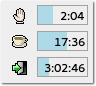Workrave in Aktion.
Mit einem Rechtsklick auf Workrave erreicht man jedoch die Einstellungen. Das Wichtigste sind wohl die Pausen, allerdings gibt es nicht nur kleine Pausen (Micro-break genannt), sondern auch ein tägliches Limit von vier Stunden, nachdem aufgefordert wird, den PC auszuschalten. Ansonsten gibt es noch allgemeine Einstellungen und Netzwerkeinstellungen. Dort kann eingestellt werden, dass ein Workrave auf einem anderen Rechner als Server dient und das tägliche Limit und die Pausen auf allen Rechnern synchronisiert. 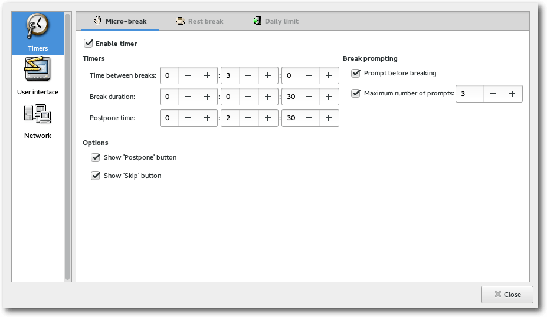
Die Zeiteinstellungen von Workrave, hier die Einstellungen der Mikropausen.
Ansonsten sind noch die Übungen zu erwähnen, die bei jeder größeren Pause angezeigt werden. Davon gibt es standardmäßig drei Stück, die z. B. dazu auffordern, die Arme kreisen zu lassen. 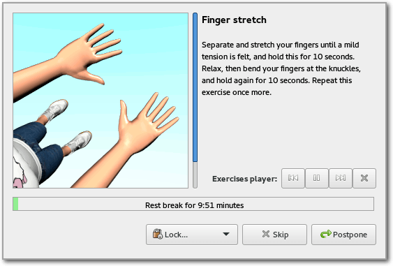
Bilder motivieren dazu, einige Übungen während der Pause vorzunehmen.
Ebenfalls erwähnenswert sind die Statistiken. Diese sind nach Tagen geordnet und zeigen unter anderem die Anzahl der Pausen an, die tägliche Nutzung und auch Aktivitäten wie die Anzahl der Mausklicks. Insgesamt sind die Statistiken ausführlicher als die, die RSIBreak zur Verfügung stellt. 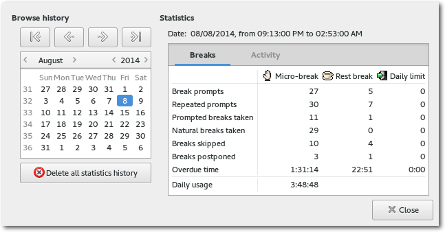
Die Statistiken von Workrave, die jeden Tag aufnimmt.
Da Workrave sich auch wie RSIBreak in der Statusleiste einnistet, ist es ebenfalls ideal für die .xinitrc oder den Autostart.
Das Beste zum Schluss
Weitere Möglichkeiten zum schonenden Arbeiten sind zum Beispiel die Verwendung einer Handauflage (zum Beispiel ein Gelpad [14]) bei der Mausnutzung oder insgesamt eine geringere Nutzung der Maus zugunsten einer erweiterten Benutzung der Tastatur (zum Beispiel mit einem Fenstermanager wie dwm [15]) und einer Auflage vor der Tastatur oder auch das Ausführen des folgenden Befehls (nicht ganz ernst gemeint):# poweroff
Augen
Die folgenden Programme passen je nach Tageszeit die Farbtemperatur des Desktops an. Dies erzeugt nachts eine wärmere Farbe, die die Augen nicht so sehr ermüden lässt. Generell sinnvoll ist es aber auch, den Monitor richtig einzustellen, und zwar nicht nur von der Position her [16], sondern auch die Helligkeit und den Kontrast [17].f.lux
f.lux [18] kommt in zwei verschiedenen Versionen: als xflux für die Kommandozeile sowie mit fluxgui [19] als grafische Anwendung (die grafische Anwendung konnte leider nicht getestet werden). Installieren lassen sich xflux beziehungsweise fluxgui durch die gleichnamigen Pakete in der Paketverwaltung. f.lux ist ebenfalls für Windows verfügbar. xflux hat nur wenige Parameter. So kann es in Berlin folgendermaßen gestartet werden, damit es sich per Längen- und Breitengrad an die lokale Zeit anpasst und entsprechend die Farbtemperatur des Monitors ändert:$ xflux -l 52.30 -g 13.25
Eine Hilfe wird bei Eingabe von xflux angezeigt.
Redshift
Redshift [20] hat zwar ein paar Optionen mehr als xflux, macht aber im Prinzip das Gleiche, nämlich anhand der lokalen Zeit die Farbtemperatur des Desktops anpassen. Installiert werden kann es durch das Paket redshift in der Paketverwaltung der verwendeten Distribution. Starten lässt sich Redshift direkt über die Kommandozeile, wobei die Parameter auch in eine Konfigurationsdatei ausgelagert werden können. Am Beispiel von Berlin und zwei Monitoren kann Redshift mit folgender Konfigurationsdatei (im Verzeichnis .config/ – siehe Manpage) entweder via Autostart oder der Datei .xinitrc (dort einfach redshift & reinschreiben) gestartet werden:; Global settings
[redshift]
temp-day=5700
temp-night=3500
transition=1
gamma=0.8:0.7:0.8
location-provider=manual
adjustment-method=randr
; The location provider and adjustment
; method settings are in their own
; sections.
[manual]
; Berlin
lat=52.3
lon=13.25
; Here both screens are adjusted by
; randr. Note that the numbering starts
; from 0.
[randr]
screen=0
screen=1
Listing: redshift.conf
[redshift]
temp-day=5700
temp-night=3500
transition=1
gamma=0.8:0.7:0.8
location-provider=manual
adjustment-method=randr
; The location provider and adjustment
; method settings are in their own
; sections.
[manual]
; Berlin
lat=52.3
lon=13.25
; Here both screens are adjusted by
; randr. Note that the numbering starts
; from 0.
[randr]
screen=0
screen=1
Allgemein
Nicht nur Programme helfen, auch sonst gibt es noch ein paar Möglichkeiten. Interessant ist der Ansatz von Markus [5], der einfach seinen Schreibtisch entsorgt [21] hat, sich ein Laptop-Stativ gekauft hat und nun ausschließlich im Stehen arbeitet. Im Prinzip reichen aber auch 2 Umzugskartons. Christian [22] hat auch einen Artikel zur Konzentrationssteigerung durch Arbeit im Stehen [23] verfasst, gespickt mit ein paar wissenschaftlichen Quellen. Als andere Möglichkeit soll HabitRPG [24] erwähnt werden, eine Website zur Gamifizierung des Lebens, mit der sich nicht erwünschtes Verhalten einfach wegtrainieren lässt. Die Software dahinter ist Open Source und auf Git verfügbar [25] und kann auch lokal oder auf einem eigenen Server betrieben werden [26]. Man hat nur einen Körper und sollte daher auch auf diesen achten. In diesem Sinne: Bleiben Sie gesund! Links[1] https://de.wikipedia.org/wiki/Repetitive_Strain_Injury_Syndrom
[2] https://justgetflux.com/research.html
[3] http://www.news-medical.net/health/Does-looking-at-a-computer-damage-your-eyes.aspx
[4] http://www.markuscerenak.com/hamsterrad-management3.html
[5] http://www.markuscerenak.com/
[6] http://www.dejal.com/timeout/
[7] https://wiki.gnome.org/Apps/GnomeBreakTimer
[8] https://github.com/knopwob/dunst
[9] https://userbase.kde.org/RSIBreak
[10] http://stalonetray.sourceforge.net/
[11] http://wiki.ubuntuusers.de/Autostart
[12] http://www.lcdf.org/xwrits/
[13] http://www.workrave.org/
[14] http://www.ergonomische.de/auflagen.php
[15] http://dwm.suckless.org/
[16] http://www.netzmarginalien.de/Bildschirm_einstellen
[17] http://autopattern.maettig.com/
[18] https://justgetflux.com/
[19] https://justgetflux.com/linux.html
[20] http://jonls.dk/redshift/
[21] http://www.markuscerenak.com/warum-ich-meinen-schreibtisch-fuer-immer-entsorgt-habe.html
[22] http://cwiwie.de/wp
[23] http://cwiwie.de/wp/?p=271
[24] https://habitrpg.com/
[25] https://github.com/HabitRPG/habitrpg
[26] http://yhaupenthal.org/1422213598.htm
| Autoreninformation |
| Yannic Haupenthal (Webseite) sitzt schon seit Jahren fast jeden Tag zu lange am Rechner und genießt nun mehr die Pausen zwischendurch. ;-) |
Beitrag teilen Beitrag kommentieren
Zum Inhaltsverzeichnis
Rezension: Linux-Server für Einsteiger
von Stefan Wichmann Mit Linux zu arbeiten ist das Eine, einen Linux-Server zu administrieren die hohe Schule, schließlich ist das System dauerhaft performant, stabil und vor Angriffen gefeit bereitzustellen. Das Buch Linux-Server für Einsteiger [1] hat den Anspruch, ein Selbststudium zu unterstützen. Gelingt dies? Redaktioneller Hinweis: Wir danken Wiley-VCH für die Bereitstellung eines Rezensionsexemplares.Inhalt und Aufteilung des Buches
Der Klappentext verspricht viel und das Inhaltsverzeichnis – inklusive Vorwort auch des Fachlektorats – erzeugt gespannte Erwartung und die insgeheime Frage, wie diese Themenvielfalt auf 725 Seiten untergebracht werden kann. Es ist von vornherein klar, dass eine Abgrenzung erfolgen muss. Jedes der Themen ist auf den Punkt zu bringen. Um es vorweg zu nehmen, es gelingt dem Autor. Nachdem auch Leser mit wenig Vorkenntnissen kurz und prägnant abgeholt wurden, führt das Buch durch den Dschungel der Möglichkeiten. Installation, Shell, Scriptsprachen (die je für sich allein ein Buch füllen könnten) werden mit den notwendigsten Themen vorgestellt. Prozesse, Fernsteuerung und Sicherheit werden wie übliche Basisthemen ebenso angesprochen wie die oft vernachlässigten Thematiken Diagnose und Drucksystem, virtuelle Maschinen und Datenbank. Beim Thema Datenbank werden leider die üblichen Verdächtigen MySQL und PostgreSQL beleuchtet, obwohl die ebenfalls kostenlose transaktionssichere Datenbank MaxDB laut OLTP-DBMS Studie im Mid-Market-Bereich vor diesen rangiert. Der Workshop am Ende des Buches macht Appetit auf mehr. Die Kurzüberschriften auf jeder Buchseite helfen auch beim schnellen Blättern das gewünschte Thema zu finden, auch sind Verweise auf weiterführende Informationen im Anschluss eines Themas vermerkt.Zielgruppe
Das Buch ist für angehende Administratoren geschrieben. So ist es im Klappentext vermerkt und entsprechend beleuchtet der Autor die Themen. Auf weiterführende Informationen wird nach ausreichenden Ausführungen verwiesen, sodass eine Anlaufstelle erkennbar ist.Stil
Eindeutige Statements (Natürlich sind Sie ... für die Sicherheit verantwortlich) zeigen dem angehenden Administrator sehr klar seine Verantwortung auf. Dies erfolgt an den richtigen Stellen und dermaßen freundschaftlich formuliert, dass der Leser auf die nächste Anmerkung gespannt ist. Dieser leise Witz im Buch ist erfrischend. Außerdem ist das Buch flüssig zu lesen und es ist sehr verständlich. Im Gegensatz zu einem Buch in ähnlicher Preisklasse fanden sich hier Hinweise, die es erlaubten, in manch einem Thema einen Schritt weiterzukommen. Wohl aus Versehen war ein Screenshot aus dem Jahr 2010 ins Buch gerutscht, aber dies tat dem Verständnis keinen Abbruch.Verständlichkeit
Eindeutige Hinweise zum Inhalt bei jedem Kapitelbeginn, eine seitliche Farbmarkierung, wo welches Kapitel beginnt und kleine Überschriften am Blattrand helfen ebenso wie die Zwischenüberschriften. Die vom Autoren vermittelten Fakten sind klar strukturiert und zielgerichtet. Aufeinander aufbauend werden die Dinge beim Namen genannt und dies so eindeutig, dass sogar erwähnt wird, dass ein Aufkleber mit dem Passwort oftmals am Gehäuseboden eines Gerätes zu finden ist. Doch auch schwierige Themen werden einfach, klar und verständlich dargeboten, sodass ich dem Autor zujubeln möchte: „Die iptables der Firewall sind verstanden!“ Ich tue es hiermit.Umfang
739 Seiten. Ehrlich gesagt, schlich sich die überraschende Erkenntnis ein, dass in diesem Buch teils mehr Informationen zu finden sind als in einem anderen Buch mit über 1440 Seiten bei gleicher Schriftgröße, das sich selbst als „umfassend“ feierte. Auf der anderen Seite sind 739 Seiten eine ganze Menge! Der Inhalt ist einfach ausgewogen und gut gewählt!Qualität
Eine Kleinigkeit fiel aber schon auf: Der Befehl renice wurde im Beispiel ohne Parameter und damit anders als beschrieben dargestellt. Das Beispiel funktioniert trotzdem. Rechtschreibfehler fanden sich genauso wenig wie Druckfehler. Das Cover wirkt ein wenig wie von einem Kinderbuch. Und auch wenn der Umgang mit dem Werk sehr vorsichtig erfolgte, da es einem Leser als Gewinn übergeben werden soll, wirkt der Buchrücken nach eingehender Rezension etwas strapaziert. Keine Angst, die Seiten sind fest und der Inhalt wäre es wert, das Buch selbst dann zu behalten, wenn die Buchbindung aufgäbe. Das Buch liegt trotz seiner 1237 Gramm noch gut in der Hand.Fazit
Das Thema Server administrieren ist sehr umfangreich. Ein Buch zu diesem Thema muss sich auf das Wichtige beschränken, jedoch vermisste ich nichts! Es gelang dem Autor, ein knackiges Buch zu schaffen, dass schwer weggelegt werden kann und selbst bekannte Themen interessant beleuchtet, sodass sich immer wieder Neues findet. Für das Selbststudium wirklich super geeignet! Das muss erst einmal jemand nachmachen! Glückwunsch an den Autoren! Redaktioneller Hinweis: Da es schade wäre, wenn das Buch bei Stefan Wichmann im Regal verstaubt, wird es verlost. Die Gewinnfrage lautet: „Wofür dient der Befehl renice?“ Die Antwort kann bis zum 10. Mai 2015, 23:59 Uhr über die Kommentarfunktion oder per E-Mail an| Buchinformationen | |
| Titel | Linux-Server für Einsteiger [1] |
| Autor | Arnold Willemer |
| Verlag | Wiley-VCH Verlag, 1. Auflage 2014 |
| Umfang | 739 Seiten |
| ISBN | 978-3-527-76046-6 |
| Preis | 44,99 € (Print), 39,99 € (E-Book) |
Links
[1] http://www.wiley-vch.de/publish/dt/books/ISBN3-527-76046-6
| Autoreninformation |
| Stefan Wichmann (Webseite) war Herausgeber im Bildungsportal Schulklick, arbeitete im Qualitätswesen, veröffentlicht EDV-Fachbücher und ist als Teamleiter im Outputmanagementbereich tätig. |
Beitrag teilen Beitrag kommentieren
Zum Inhaltsverzeichnis
Rezension: C Programming in Easy Steps
von Jochen Schnelle Die Programmiersprache C hat zwar schon einige Jahre „auf dem Buckel“, wird aber nach wie vor sehr oft eingesetzt. Insofern kann es dem interessierten Programmierer nicht schaden, zumindest ein bisschen C zu können. Und Einsteiger in C sind die erklärte Zielgruppe des vorliegenden, englischsprachigen Buchs „C Programming in Easy Steps“ [1]. Der Untertitel des Buchs lautet „grasp the nuts and bolts of programming C“, was frei übersetzt soviel heißt wie „verstehe die Grundlagen von C“. Und da das Buch aus der „Easy Steps“-Reihe ist (easy steps = einfache Schritte), soll das besonders einfach erfolgen.Der Inhalt
Zu Beginn des Buchs wird kurz auf die Historie von C eingegangen, bevor die Installation des für C notwendigen Compilers erklärt wird. Positiv ist hier anzumerken, dass Linux und Windows gleichwertig behandelt werden und für beide Betriebssystem die Nutzung des gcc-Compilers erklärt wird. Danach geht es mit der Einführung in C los. Behandelt wird alles, was zu den Grundlagen gehört: Variablenzuweisungen, Kontrollstrukturen und Schleifen, Umgang mit Dateien, Zeiger, Nutzung der Standardbibliothek sowie Anlegen von Strukturen mittels struct. Den Abschluss des Buchs bildet eine 24-seitige Referenz mit einem Überblick über die Funktionen und Datentypen der Standardbibliothek.Voll in Farbe
In Gegensatz zu vielen anderen (IT-)Fachbüchern ist dieses Buch durchgehend in Farbe gedruckt. Dadurch können wichtige Stellen effektiv hervorgehoben werden und auch der im Buch enthalten Quellcode ist durchgehend mit Syntax-Hervorhebung abgedruckt, was der Lesbarkeit durchweg zugute kommt.Einfaches Englisch
Apropos Lesbarkeit: das Buch ist – laut Aussage auf dem Umschlag des Buchs – mit Absicht in einfachem, verständlichen Englisch geschrieben. Natürlich sind die im Rahmen des Inhalts notwendigen Fachbegriffe enthalten, aber ansonsten wird komplett auf „Insider-Slang“ verzichtet, so dass das Buch auch mit Schulenglisch gut lesbar und verständlich ist.Beispiele …
In jedem Kapitel gibt es Beispiele zu dem zuvor Erklärten. Zwar sind diese Beispiele gut nachzuvollziehen – allerdings sind sie auch sehr flach und wirken teilweise etwas konstruiert. Für einen größeren Lerneffekt wäre es hier sicherlich besser, wenn der Autor etwas praxisnähere Beispiele gewählt hätte, die vielleicht auch noch aufeinander aufbauen.Fazit
Das Buch „C Programming in Easy Steps“ bietet eine verständliche, gut zu lesende Einführung in die Programmiersprache C. Lediglich die Beispiele hätten etwas tiefer gehend sein dürfen. Allerdings ist das Buch mit einem Preis von 16,25 € für ein durchgehend in Farbe gedrucktes Fachbuch recht günstig, sodass der interessierte Einsteiger in C hier nicht viel falsch machen kann.| Buchinformationen | |
| Titel | C Programming in Easy Steps [1] |
| Autor | Mike McGrath |
| Verlag | In Easy Steps Limited |
| Umfang | 192 Seiten |
| ISBN | 978-1-84078-544-9 |
| Preis | 16,25 € |
Links
[1] http://ineasysteps.com/products-page/all_books/c-programming-in-easy-steps-4th-edition-2/
| Autoreninformation |
| Jochen Schnelle (Webseite) programmiert zwar bevorzugt in Python, schaut aber gerne auch mal über den Tellerrand. |
Beitrag teilen Beitrag kommentieren
Zum Inhaltsverzeichnis
Rezension: Vorgehensmuster für Software-Architektur
von Matthias Sitte Das 249 Seiten umfassende Buch „Vorgehensmuster für Software-Architektur – Kombinierbare Praktiken in Zeiten von Agile und Lean“ [1] von Stefan Toth befasst sich mit dem Problem, wie Software-Architektur-Methodik zu einem zeitgemäßen Vorgehen (Agile [2], Lean [3] etc.) passen kann bzw. wie beide gemeinsam den größten Nutzen bringen können. Statt einer Beschreibung komplexer Methoden verfolgt Stefan Toth eine andere Grundidee in seinem Buch: Es gibt nicht den einen Weg für alle Projekte, sondern viele schlanke Praktiken, die sich bewährt haben und die – als Puzzleteile betrachtet – kombiniert werden können, um Nutzen zu stiften. Redaktioneller Hinweis: Wir danken dem Carl Hanser Verlag für die Bereitstellung eines Rezensionsexemplares.Inhalt und Aufteilung des Buches
Das Buch ist in sechs relativ eigenständige Kapitel unterteilt und wird durch umfassende Literatur- und Stichwortverzeichnisse ergänzt. Die Einleitung nutzt Stefan Toth, um dem Leser die Motivation und das „Mission Statement“, also das Ziel des Buches, näher zu bringen und gleichzeitig das Buch gegenüber anderen Büchern abzugrenzen. Wichtig ist die Idee der „Rollen“, welche der Unterteilung des Buches dienen und in denen sich der Leser während eines Software-Projektes wiederfinden kann: Entwickler, Architekten und Manager. Ein kurzer Abriss, warum Software-Architektur wichtig ist, rundet das Einleitungskapitel ab. Kapitel 2 (30 Seiten) beschreibt die inhaltliche Vision des Buches und legt den Grundstein für die weitere Lektüre. Die übergreifende Idee für die im Buch vorgestellten 29 Vorgehensmuster für Software-Architektur wird detailliert dargestellt. Die folgenden Abschnitte sind wiederum nach den verschiedenen persönlichen Vorlieben des Lesers unterteilt: Abschnitt 2.2 ist für „Pragmatiker“ gedacht, die, ausgehend von einer Kapitelzusammenfassung, mit jeweils einem Verzeichnis der enthaltenen Vorgehensmuster, Problem- und Kurzbeschreibung auskommen. Abschnitt 2.3 richtet sich eher an „Methodiker“ und beschreibt ein generisches Entwicklungsvorgehen, in das anschließend die Vorgehensmuster integriert werden. Für „Rollenfreunde“ ist Abschnitt 2.4 gedacht, der sich der Frage widmet, ob und wenn ja welche Arten von Architekten in zeitgemäßen Entwicklungsprojekten gefragt sind. Den Abschluss von Kapitel 2 bildet ein (fiktives) Fallbeispiel, anhand dessen alle Vorgehensmuster im Laufe des Buches vorgestellt werden. Die Reihenfolge der folgenden Kapitel 3–6 ist nicht zufällig gewählt: Kapitel 3 („Die Basis für Architekturarbeit“, 38 Seiten) thematisiert Muster, die helfen sollen, die richtigen Anforderungen an Software-Projekte abzuholen, sie zu strukturieren, zu priorisieren und laufend zu verfeinern. Auch die iterative Abarbeitung von Architekturanforderungen in Backlogs [4] oder die Verarbeitung mit Kanban [5] werden beschrieben. Kapitel 4 („Richtig entscheiden“, 50 Seiten) beschreibt Vorgehensaspekte beim Treffen von Architekturentscheidungen, um sie beispielsweise von unwichtigeren Entscheidungen zu trennen, sie zu planen und bei Bedarf über mehrere Iterationen hinweg zu bearbeiten, sie zum richtigen Zeitpunkt in der richtigen Granularität zu treffen und auftauchende Risiken aktiv zu behandeln. In Kapitel 5 („Zusammenarbeit und Interaktion“, 46 Seiten) werden Vorgehensweisen für dynamische Zusammenarbeit besprochen. Die in diesem Kapitel vorgestellten Muster zeigen, wie man effektiv mit „Stakeholdern“ (Kunden) zusammenarbeiten kann, wie man trotz der parallelen Umsetzungsarbeit mehrerer Entwickler oder Teams eine konsistente Architektur gewährleisten kann und wie man Wissensmonopole vermeiden und so für mehr Transparenz sorgen kann. Im sechsten und letzten Kapitel („Abgleich mit der Realität“, 52 Seiten) werden Architekturideen und -anforderungen mit den tatsächlich beobachtbaren Eigenschaften des Systems verbunden. Die hier vorgestellten Prüfungsmuster zeigen, wie man frühe Rückmeldungen fördert, wie man Architektureigenschaften im Code analysieren und prüfen kann, wie man Architekturziele realistisch im Auge behält, und wie man mit gefundenen Problemen umgehen kann.Wie liest es sich?
Die sechs Kapitel sind allesamt ähnlich aufgebaut: Jedes Kapitel beginnt mit einer kurzen Einleitung sowie einer informativen Grafik, in der Inhalt und Struktur des Kapitels inklusive der Vorgehensmuster zusammengefasst sind. Das Fallbeispiel, auf das zu Beginn der Unterkapitel oft zurückgegriffen wird, bildet den Spannungsbogen über das Buch und lockert den Lesefluss auf. Die Vielzahl an Grafiken visualisiert die Vorgehensmuster auf schöne Art und Weise und macht so das gerade Gelesene auch optisch noch einmal deutlich. „Tipps zum Scheitern“ stellen den Abschluss eines vorgestellten Vorgehensmusters dar, in denen beschrieben wird, wie man mit diesem Muster scheitern und dem Projekt schaden kann – ungewohnt, aber mit Sicherheit bereichernd, denn manchmal erkennt man sich selbst hierin doch wieder und kann daraus lernen. Die sechs Kapitel und die darin enthaltenen Vorgehensmuster kann man gut von vorne nach hinten lesen, wobei sich die Struktur der Kapitel und Unterabschnitte wiederholt. Dies kann auf Dauer etwas langatmig wirken, hindert aber nicht den Lesefluss. Man kann das Buch aber auch nicht-linear lesen, indem man Kapitel weglässt bzw. überspringt, da die Muster auf vielfältige Weise miteinander wechselwirken und entsprechende Verweise aufeinander gut eingebracht sind. Dies ermöglicht es, zu weiteren interessanten Ansatzpunkten zu springen und später wieder zum Kapitel zurückzukehren. Sprachlich sind die Ideen klar und deutlich formuliert und einfach gehalten, und die gut durchdachten Grafiken tragen sehr zur Verdeutlichung der Ideen bei, so dass das Lesen Spaß macht.Fazit
Stefan Toth besitzt einen umfangreichen Erfahrungsschatz aus vielen Software-Projekten, den er gerne ausführlich in seinem Buch teilt. Die zahlreichen Vorgehensmuster und Ideen stellt er ausführlich dar und illustriert sie mit Beispielen, Grafiken, „Tipps zum Scheitern“ und etlichen (Quer-)Verweisen. Mitunter komplizierte Inhalte werden sprachlich einfach gut vermittelt, so dass man dieses Buch auch später gerne nochmal zur Hand nimmt und als „Referenz“ zum Nachschlagen verwendet. Auf der Webseite [6] zum Buch findet man übrigens einen Teil von Kapitel 4 als Leseprobe (Seiten 83 bis 100 aus dem Buch), das Vorwort zum Buch, das Inhaltsverzeichnis des Buches, einen Überblick über die vorgestellten Vorgehensmuster, einige Präsentationsfolien aus verschiedenen Workshops sowie Links und weiterführende Informationen zum Thema und zu einzelnen Vorgehensmustern.| Buchinformationen | |
| Titel | Vorgehensmuster für Software-Architektur – Kombinierbare Praktiken in Zeiten von Agile und Lean [1] |
| Autor | Stefan Toth |
| Verlag | Carl Hanser Verlag (November 2013) |
| Umfang | 249 Seiten, broschiert |
| ISBN | 978-3-446-43615-2 |
| Preis | 34,99 € (Buch), 27,99 € (EPUB) |
Links
[1] http://www.hanser-fachbuch.de/buch/Vorgehensmuster+fuer+Softwarearchitektur/9783446436152
[2] https://de.wikipedia.org/wiki/Agile_Softwareentwicklung
[3] https://de.wikipedia.org/wiki/Lean_Development
[4] https://de.wikipedia.org/wiki/Scrum
[5] https://de.wikipedia.org/wiki/Kanban
[6] http://www.swamuster.de/
| Autoreninformation |
| Matthias Sitte (Webseite) ist Redakteur bei freiesMagazin und verwendet seit gut 10 Jahren Linux sowohl beruflich als auch privat. |
Beitrag teilen Beitrag kommentieren
Zum Inhaltsverzeichnis
Rezension: Apps entwickeln mit Android Studio – Video Training
von Sujeevan Vijayakumaran Dieses Mal wird kein Buch, sondern ein Video-Training rezensiert: „Apps entwickeln mit Android Studio“ [1] von Sebastian Witt, erschienen im Rheinwerk Verlag. Redaktioneller Hinweis: Wir danken dem Rheinwerk Verlag für die Bereitstellung eines Rezensionsexemplares.Was ist drin?
Das Video-Training umfasst insgesamt zehn Kapitel mit einer Gesamtspiellänge von acht Stunden. Die Kapitel bauen ab dem vierten Kapitel aufeinander auf, sodass im gesamten Video-Training eine App mit verschiedenen Funktionen entwickelt wird. Das Video-Training beginnt mit der ersten Einführung in die Entwicklungsumgebung Android Studio. Dort wird zunächst die Installation durchgeführt und anschließend die gängigen Funktionen erläutert. Es erfolgt ebenso die Erstellung der ersten „Hello World“ Android-App. Das zweite Kapitel bietet eine verhältnismäßig kurze Einführung in Java, in der innerhalb von knapp 50 Minuten die wichtigsten Elemente der Sprache erläutert werden, darunter Klassen, Objekte, Methoden und Vererbungen und Interfaces. Im dritten Kapitel folgt die Erstellung der ersten „richtigen“ Android-App, mit der vor allem ein Überblick über die verschiedenen Elemente einer Android-App gegeben wird. Darunter fallen die Erstellung von Activitys, die Handhabung von Layouts und weiteren Ressourcen sowie das Platzieren von Buttons und von Klick-Ereignis-Handlern. Das vierte Kapitel widmet sich vollständig dem Erstellen von Layouts. Es fokussiert sich auf lineare und relative Layouts und erklärt, wie man graphische Elemente in den entsprechenden Layouts platzieren kann. In Kapitel fünf folgt die Weiterentwicklung der „Pfadfinderwerkzeuge“-App, die im vorherigen Kapitel begonnen wurde. Es wird eine Navigation hinzugefügt, die ersten Fragments erzeugt und in die App eingebunden. Das sechste Kapitel widmet sich den Anpassungen der App an die verschiedenen Android-Geräte, also Telefone und Tablets, sowie an die verschiedenen Auflösungen, Größen und Display-Ausrichtungen. Im siebten Kapitel dreht es sich vollständig um Datenbanken. Hier wird die Einbindung und Nutzung einer sqlite-Datenbank vorgeführt. Die abschließenden Kapitel befassen sich mit der Ansteuerung der Hardware, darunter fallen die Nutzung des Lage- und Kompass-Sensors im achten Kapitel, sowie die Ansteuerung der Kamera im neunten Kapitel. Das Video-Training schließt mit einem Kapitel ab, in dem gezeigt wird, wie die fertig erstellte App im Play Store veröffentlicht werden kann.Wie schaut es sich?
Normalerweise werden in freiesMagazin Bücher rezensiert – dies dürfte die erste Rezension zu einem Video-Training sein. Das Video-Training wird im Web-Browser abgespielt, wofür Flash benötigt wird. Das gesamte Training unterteilt sich in mehrere Kapitel, worin jeweils einzelne Videos enthalten sind. Die Länge eines Videos beträgt im Durchschnitt 10 Minuten, einzelne Videos können aber auch länger oder kürzer sein. Jedes Video behandelt in der Regel genau ein Thema. Das Video-Training ist mit einer Länge von acht Stunden nicht kurz, behandelt aber die meisten Dinge weniger detailreich als es bei einem Buch in derselben Preiskategorie der Fall wäre. Das Praktische von einem Video-Training ist vor allem, dass man alle Schritte gut nachvollziehen kann und Punkt für Punkt nachmachen kann. Um den Umgang mit Android Studio und das Entwickeln einer App vollständig nachzuvollziehen, sollte man also stets alle Schritte gleichzeitig durchführen. Die Art und Weise wie der Sprecher Sebastian Witt redet, ist nicht zu schnell und auch nicht zu langsam. Es wird stets genannt, was gedrückt wird, wenn eine Aktion durchgeführt wird. Selbst das Bestätigen von „OK“-Buttons wird angekündigt mit „Ich bestätige (diesen Dialog)“. Dies ist zwar prinzipiell klar, er schafft dadurch allerdings auch an einigen anderen Stellen eine Konsistenz, wo es nicht unbedingt klar ist. Auch Tastatur-Kürzel werden immer genannt, so dass immer nachvollzogen werden kann, welche Tasten gedrückt worden sind. Man kommt an keiner Stelle zu einem Punkt, wo nicht klar ist, was gemacht worden ist. Das Video-Training fokussiert mehr auf die Nutzung von Android Studio und weniger auf etwa aktuelle Android-APIs. Da das Video-Training im Sommer und Herbst 2014 aufgenommen wurde, wird die Android Studio Version 0.5 bis 0.8 genutzt. Einige Kapitel am Anfang wurden vor der Veröffentlichung mit der neueren Version nochmals aufgenommen, da sich die Bedienführung geändert hat. Mittlerweile ist Android Studio in Version 1.1 erhältlich; die Anleitungen lassen sich aber größtenteils weiterhin mit wenigen Einschränkungen nachvollziehen.Kritik
Technisch gesehen ist es schade, dass Flash für das Video-Training vorausgesetzt wird. Mit HTML5-Technologien sollte dies ebenfalls umsetzbar sein. Dies betrifft aber wohl generell alle Video-Trainings aus dem Rheinwerk-Verlag. Es sind Funktionen enthalten, mit denen man automatisch beim Starten auf das letzte Video springt. Weiterhin kann man auch Lesezeichen setzen. Inhaltlich lässt sich nicht viel aussetzen. Verglichen zu einem Buch erhält man für knapp 40 Euro allerdings weniger Inhalt. Hier muss man abwägen oder auch ausprobieren, ob das Format des Video-Trainings für einen selbst passt. Es ist zwar mit acht Stunden recht lang, allerdings können da nur die grundsätzlichen Dinge erläutert werden. Das Video-Training leidet zwangsläufig auch unter dem Gesichtspunkt, dass mittlerweile Android 5.0 erschienen ist, bei dem es einige Änderungen in der aktuellen API gibt. Unabhängig davon sind die Erläuterungen gut und verständlich. Die Geschwindigkeit des Sprechens ist weder zu schnell noch zu langsam, sodass man dem Geschehen gut folgen kann. Nichtsdestoweniger muss man nach dem Schauen des Video-Trainings weiterhin in der Android-API-Dokumentation nachschlagen oder das eine oder andere Video nochmals anschauen, wenn man an seiner eigenen App bastelt.| Buchinformationen | |
| Titel | Apps entwickeln mit Android Studio - Schritt für Schritt zur eigenen Android-App [1] |
| Autor | Sebastian Witt |
| Verlag | Rheinwerk, 2014 |
| Umfang | 8 Stunden |
| ISBN | 978-3-8362-3541-9 |
| Preis | 39,90 € (DVD/Download) |
Links
[1] https://www.rheinwerk-verlag.de/apps-entwickeln-mit-android-studio_3697/
| Autoreninformation |
| Sujeevan Vijayakumaran (Webseite) interessiert sich sehr für das Mobile-Computing und programmiert hin und wieder auch an seiner eigenen Android-App. |
Beitrag teilen Beitrag kommentieren
Zum Inhaltsverzeichnis
Leserbriefe
Für Leserbriefe steht unsere E-MailadresseLeserbriefe und Anmerkungen
Kernelrückblick
-> Kernelrückblick: Das ist mein Hauptartikel den ich in freiesMagazin immer lese. Andere Artikel sind auch interessant, aber für mein Bedarf zuweilen etwas zu speziell. Gerne würde ich auch mal etwas über alltägliche Dinge lesen, z.B. Backup erstellen. Sehr interessant scheint mir dabei nicht nur die Vorstellung von verschiedenen Programmen (die häufig fürchterlich überladen sind), sondern wie eine konkrete Lösung sozusagen mit Bordmitteln (rsync halt wieder einmal mehr) erstellt werden kann. Die wahre Herausforderung ist im Fall der Fälle sowieso [die Wiederherstellung] der Daten (ein Full-Restore ist noch eine einfache Übung), wenn es denn selektiv sein sollte und nicht nur die zuletzt gesicherte Datei sondern die Version davor oder eventuell sogar eine noch frühere Version...ice (Kommentar) <- Dann ist vielleicht dieser Artikel interessant für Dich: „Cloud-Backup mit Bordmitteln“ [1] Hat zumindest schon mal den richtigen Titel – und ob man das Backup im Anschluss in die Cloud kopiert oder woandershin, ist glaub ich Nebensache. ;)
Maren
Firefox-Installation
-> Gibt es in freiesMagazin irgendeine ältere Ausgabe, die mir exakt beschreibt, wie ich das beschriebene Firefox installiere?Wolfgang Steuer <- Mir fällt spontan keine Ausgabe ein, in der wir dies für Firefox speziell beschreiben – es kommt leider immer sehr darauf an, was nun genau in der Datei tar.bz2 steckt. In Ihrem Fall finden Sie auf der (englischen) Support-Seite von Firefox eine Anleitung [2]. Im Wesentlichen müssen Sie nur das heruntergeladene tar.bz2-Archiv entpacken und dann Firefox aus diesem Verzeichnis heraus starten.
Matthias Sitte
Privacy Guide
-> „Es ist nicht möglich den Zugriff auf z.B. „googleapis.com“ für eine Webseite zuzulassen, für eine andere aber zu sperren.“ Wenn mich nicht alles täuscht, sollte das aber möglich sein, siehe FAQ-Kapitel 5.4, Stichwort „ABE“ [3]. Aufgrund der kryptischen Syntax scheint das aber eher nichts für Anfänger zu sein.Gast (Kommentar) Links
[1] http://www.freiesmagazin.de/freiesMagazin-2012-06
[2] https://support.mozilla.org/en-US/kb/install-firefox-linux#w_installing-outside-of-a-package-manager
[3] https://noscript.net/faq#qa5_4
Die Redaktion behält sich vor, Leserbriefe gegebenenfalls zu kürzen. Redaktionelle Ergänzungen finden sich in eckigen Klammern. Beitrag teilen Beitrag kommentieren
Zum Inhaltsverzeichnis
Veranstaltungskalender
| Messen | ||||
| Veranstaltung | Ort | Datum | Eintritt | Link |
| Linuxwochen Wien | Wien | 07.05.–09.05.2015 | frei | http://linuxwochen.at/ |
| LUG Camp | Bergneustadt | 14.05.–17.05.2015 | – | http://www.bluefrogs.de/ |
| Linuxwochen Linz | Linz | 16.05.–17.05.2015 | frei | http://linuxwochen.at/ |
| BerlinSides | Berlin | 29.05.–01.06.2015 | – | https://berlinsides.org/ |
| GPN15 | Karlsruhe | 04.06.–07.06.2015 | – | http://gulas.ch/ |
| Chaos Singularity | BIEL | 12.06.–14.06.2015 | 20 CHF | http://www.cosin.ch/ |
| TÜBIX | Tübingen | 13.06.2015 | frei | http://www.tuebix.org/ |
| DebConf15 | Heidelberg | 15.08.–22.08.2015 | – | http://debconf15.debconf.org/ |
| FrOSCon | Sankt Augustin | 22.08.–23.08.2015 | – | http://www.froscon.de/ |
Vorschau
freiesMagazin erscheint am ersten Sonntag eines Monats. Die Juni-Ausgabe wird voraussichtlich am 7. Juni u. a. mit folgenden Themen veröffentlicht:- Rezension: Linux Handbuch
- Rezension: What if!
- Rückblick: DANTE-Frühjahrstagung 2015 in Stralsund
Konventionen
An einigen Stellen benutzen wir Sonderzeichen mit einer bestimmten Bedeutung. Diese sind hier zusammengefasst:| $: | Shell-Prompt |
| #: | Prompt einer Root-Shell – Ubuntu-Nutzer können hier auch einfach in einer normalen Shell ein sudo vor die Befehle setzen. |
| ~: | Abkürzung für das eigene Benutzerverzeichnis /home/BENUTZERNAME |
Impressum ISSN 1867-7991
freiesMagazin erscheint als PDF, EPUB und HTML einmal monatlich.Erscheinungsdatum: 3. Mai 2015
| Kontakt | |
| Postanschrift | freiesMagazin |
| c/o Dominik Wagenführ | |
| Beethovenstr. 9/1 | |
| 71277 Rutesheim | |
| Webpräsenz | http://www.freiesmagazin.de/ |
| Autoren dieser Ausgabe | |
| Yannic Haupenthal | Gesundheit am PC |
| Mathias Menzer | Der April im Kernelrückblick |
| Jochen Schnelle | Rezension: C Programming in Easy Steps - Buchrezension |
| Matthias Sitte | Rezension: Vorgehensmuster für Software-Architektur |
| Daniel Stender | Impress.js-basierte Präsentationen mit Hovercraft |
| Alexander Tolios | Einführung in LilyPond 2.18.2 |
| Sujeevan Vijayakumaran | Rezension: Apps entwickeln mit Android Studio – Video Training |
| Stefan Wichmann | Rezension: Linux-Server für Einsteiger |
| Redaktion | |
| Christian Schnell | Matthias Sitte |
| Dominik Wagenführ (Verantwortlicher Redakteur) | |
| Satz und Layout | |
| Moritz Kiefer | Kai Welke |
| Korrektur | |
| Daniel Braun | Frank Brungräber |
| Vicki Ebeling | Stefan Fangmeier |
| Mathias Menzer | Christian Schnell |
| Karsten Schuldt | |
| Veranstaltungen | |
| Ronny Fischer | |
| Logo-Design | |
| Arne Weinberg (CC-BY-SA 4.0 Unported) | |
Soweit nicht anders angegeben, stehen alle Artikel, Beiträge und Bilder in freiesMagazin unter der Creative-Commons-Lizenz CC-BY-SA 4.0 International. Das Copyright liegt beim jeweiligen Autor. Die Kommentar- und Empfehlen-Icons wurden von Maren Hachmann erstellt und unterliegen ebenfalls der Creative-Commons-Lizenz CC-BY-SA 4.0 International. freiesMagazin unterliegt als Gesamtwerk der Creative-Commons-Lizenz CC-BY-SA 4.0 Unported mit Ausnahme der Inhalte, die unter einer anderen Lizenz hierin veröffentlicht werden. Das Copyright liegt bei Dominik Wagenführ. Es wird erlaubt, das Werk/die Werke unter den Bestimmungen der Creative-Commons-Lizenz zu kopieren, zu verteilen und/oder zu modifizieren. Die xkcd-Comics stehen separat unter der Creative-Commons-Lizenz CC-BY-NC 2.5 Generic. Das Copyright liegt bei Randall Munroe.
Zum Inhaltsverzeichnis
File translated from TEX by TTH, version 3.89.
On 3 May 2015, 09:29.